١. قبل أن تبدأ
ما هو التجويد؟
أي رواية هذه؟
كيف تقرأ الأمثلة
٢. الكلمات التي ستقابلك كثيراً (قاموس بسيط)
الحركة: فتحة وضمة وكسرة
السكون
الشدة
التنوين
المد
الغنة
الإظهار
الإدغام
الإخفاء
الإقلاب
التفخيم والترقيق
الهمزة والتسهيل
الإمالة
المخرج
٣. من أين يخرج كل حرف؟ (مع الصور)
أولاً: الحلق – الحروف التي تخرج من الحنجرة والحلق
ثانياً: أقصى اللسان – القاف والكاف
ثالثاً: وسط اللسان – الجيم والشين والياء
رابعاً: حافة اللسان – الضاد
خامساً: طرف اللسان مع اللثة – اللام والنون والراء
سادساً: طرف اللسان مع أصول الأسنان – الطاء والدال والتاء
سابعاً: طرف اللسان قرب الأسنان السفلى – الصاد والسين والزاي
ثامناً: طرف اللسان بين الأسنان – الظاء والذال والثاء
تاسعاً: الشفتان – الفاء والباء والميم والواو
عاشراً: الجوف والخيشوم
٤. شكل الفم مع الحركات
الفتحة والضمة والكسرة
الفتحة العادية والفتحة الممالة
٥. الحروف الغليظة والحروف الرقيقة
سبعة حروف غليظة دائماً
الراء: أحياناً غليظة وأحياناً رقيقة
لام كلمة (الله)
٦. القاعدة الكبرى: النون الساكنة والتنوين
الاحتمال الأول: انطق النون واضحة (الإظهار)
الاحتمال الثاني: أذِب النون في الحرف بعدها (الإدغام)
الاحتمال الثالث: حوّل النون إلى ميم (الإقلاب)
الاحتمال الرابع: أخفِ النون (الإخفاء)
ملخص في جدول ذهني
٧. الميم الساكنة
إذا جاء بعد الميم الساكنة باء: أخفِها
إذا جاء بعدها ميم: أذِبها
إذا جاء بعدها أي حرف آخر: انطقها واضحة
٨. الغنة والحروف المشددة والقلقلة
النون والميم إذا كان عليهما شدة
القلقلة: خمسة حروف تهتز إذا سكنت
٩. كم أطول الصوت؟ (المد)
المد العادي: حركتان
إذا جاءت الهمزة بعد المد في كلمة أخرى: حركتان (أو أربع)
إذا جاءت الهمزة بعد المد في الكلمة نفسها: أربع حركات
إذا جاء بعد المد حرف مشدد: ست حركات
إذا وقفت على كلمة آخرها مد ثم حرف: حركتان أو أربع أو ست
الحروف في أوائل السور
١٠. الهمزة عند الدوري (تخفيف الهمز)
همزتان في كلمة واحدة: نصف همزة مع ألف بينهما
همزتان في كلمتين بنفس الحركة: أسقط الأولى
كلمات مخصوصة
الهمزة الساكنة: انطقها كاملة
كلمات تُسكَّن عند الدوري
١١. الإمالة (صوت القراءة السودانية)
كيف تنطق الإمالة
أين تُمال؟ (١) الألف التي بعدها راء مكسورة في آخر الكلمة
(٢) كلمة الكافرين
(٣) الألف المقصورة إذا كان قبلها راء
(٤) كلمة الناس إذا كانت مكسورة الآخر
١٢. فروق أخرى تميز الدوري عن حفص
لا وقفات خاطفة (لا سكت)
ثلاثة حروف تُدغم زيادة عند الدوري
ياء المتكلم تُفتح قبل الهمزة
ياءات محذوفة تُنطق عند الوصل
هاء الضمير في كلمات مخصوصة
كلمات تُقرأ بشكل مختلف
١٣. كيف تقف على الكلمة
القاعدة العامة
علامات الوقف في المصحف
١٤. تدريب: سورة الفاتحة برواية الدوري خطوة خطوة
الآية ١
الآية ٢
الآية ٣
الآية ٤
الآية ٥
الآيتان ٦ و٧
الأمثلة: الآية بخط أخضر كبير، والكلمة المقصودة ملونة، وتحتها اسم السورة ورقم الآية في مصحف الدوري (ورقمها في مصحف حفص إن اختلف).
٢. الكلمات التي ستقابلك كثيراً (قاموس بسيط)
اقرأ هذه الصفحة أولاً، وارجع إليها كلما قابلتك كلمة غريبة.
الحركة: فتحة وضمة وكسرة
الحركة هي الصوت القصير الذي يأتي بعد الحرف. الفتحة (ــَ) صوت مثل «أَ» كما في «بَ». الضمة (ــُ) صوت مثل «أُو» قصير كما في «بُ». الكسرة (ــِ) صوت مثل «إِي» قصير كما في «بِ». وكل حركة تأخذ زمناً واحداً نسميه (حركة)، وسنقيس به طول المد.
اِ۬لۡحَمۡدُ لِلَّهِ رَبِّ اِ۬لۡعَٰلَمِينَ
سُورَةُ ٱلْفَاتِحَةِ – الآية 1 (عد البصرة) · وفي مصحف حفص: 2 (1)
السكون
السكون (ــْ) معناه أن الحرف ليس بعده أي صوت؛ تنطق الحرف وتقف عنده. مثل الميم في «الحَمْد» والباء في «يَعْبُد»؟ لا، الباء متحركة، أما العين فساكنة. الحرف الساكن هو بطل معظم قواعد التجويد، لأن الحرف حين يسكن يتأثر بما بعده.
صِرَٰطَ اَ۬لَّذِينَ أَنۡعَمۡتَ عَلَيۡهِمۡ
سُورَةُ ٱلْفَاتِحَةِ – الآية 6 (عد البصرة) · وفي مصحف حفص: 7 (1)
الشدة
الشدة (ــّ) معناها أن الحرف مكرر: الأول ساكن والثاني متحرك، فـ«إِنَّ» أصلها «إِنْنَ». حين ترى شدة على حرف اضغط عليه قليلاً.
إِنَّ اَ۬لَّذِينَ كَفَرُواْ سَوَآءٌ عَلَيۡهِمۡ ءَٰا۬نذَرۡتَهُمۡ أَمۡ لَمۡ تُنذِرۡهُمۡ لَا يُؤۡمِنُونَ
سُورَةُ البَقَرَةِ – الآية 5 (عد البصرة) · وفي مصحف حفص: 6 (2)
قُلۡ أَعُوذُ بِرَبِّ اِ۬لنّ۪اسِ
سُورَةُ النَّاسِ – الآية 1 (عد البصرة) (114)
التنوين
التنوين هو نون ساكنة صغيرة في آخر الكلمة تُسمع ولا تُكتب، ويُرمز له بمضاعفة الحركة: ــً ــٌ ــٍ. فكلمة «عَظِيمٌ» تُنطق «عَظِيمُنْ». ولهذا فكل قاعدة تخص النون الساكنة تخص التنوين أيضاً.
خَتَمَ اَ۬للَّهُ عَلَىٰ قُلُوبِهِمۡ وَعَلَىٰ سَمۡعِهِمۡۖ وَعَلَىٰٓ أَبۡصٰ۪رِهِمۡ غِشَٰوَةٞۖ وَلَهُمۡ عَذَابٌ عَظِيمٞ
سُورَةُ البَقَرَةِ – الآية 6 (عد البصرة) · وفي مصحف حفص: 7 (2)
المد
المد هو تطويل الصوت. وله ثلاثة حروف: الألف بعد فتحة (قَال)، والواو الساكنة بعد ضمة (يَقُول)، والياء الساكنة بعد كسرة (قِيل). حين تجد أحدها تمد صوتك بمقدار حركتين على الأقل، أي بمقدار زمن نطق حرفين متحركين.
وَإِذۡ قَالَ رَبُّكَ لِلۡمَلَٰٓئِكَةِ إِنِّي جَاعِلٞ فِي اِ۬لۡأَرۡضِ خَلِيفَةٗۖ قَالُوٓاْ أَتَجۡعَلُ فِيهَا مَن يُفۡسِدُ فِيهَا وَيَسۡفِكُ اُ۬لدِّمَآءَ وَنَحۡنُ نُسَبِّحُ بِحَمۡدِكَ وَنُقَدِّسُ لَكَۖ قَالَ إِنِّيَ أَعۡلَمُ مَا لَا تَعۡلَمُونَ
سُورَةُ البَقَرَةِ – الآية 29 (عد البصرة) · وفي مصحف حفص: 30 (2)
وَإِذَا قِيلَ لَهُمۡ لَا تُفۡسِدُواْ فِي اِ۬لۡأَرۡضِ قَالُوٓاْ إِنَّمَا نَحۡنُ مُصۡلِحُونَ
سُورَةُ البَقَرَةِ – الآية 10 (عد البصرة) · وفي مصحف حفص: 11 (2)
الغنة
الغنة صوت رنان يخرج من الأنف، ويرافق حرفي النون والميم. جرب أن تقول «نّ» وأنت تمسك أنفك بأصابعك: ستشعر بأن الصوت محبوس؛ هذه هي الغنة. ومعظم القواعد الآتية تدور حول: متى نُظهر هذه الغنة ونطولها، ومتى نخفيها.
مِنَ اَ۬لۡجِنَّةِ وَاَلنّ۪اسِ
سُورَةُ النَّاسِ – الآية 6 (عد البصرة) (114)
الإظهار
الإظهار معناه ببساطة: انطق الحرف واضحاً كما هو، بلا زيادة ولا تغيير. إذا قيل لك «أظهر النون» فقل النون كاملة صريحة.
صِرَٰطَ اَ۬لَّذِينَ أَنۡعَمۡتَ عَلَيۡهِمۡ
سُورَةُ ٱلْفَاتِحَةِ – الآية 6 (عد البصرة) · وفي مصحف حفص: 7 (1)
الإدغام
الإدغام معناه: الدمج. أن تُدخل حرفاً في الحرف الذي بعده حتى يصيرا حرفاً واحداً مشدداً. مثال: «مِنْ رَبِّهِمْ» لا تقول «مِنْ» ثم «رَبِّهِمْ»، بل تقفز من الميم إلى الراء المشددة مباشرة: «مِرَّبِّهِمْ». كأن النون ذابت في الراء.
أُوْلَٰٓئِكَ عَلَىٰ هُدٗى مِّن رَّبِّهِمۡۖ وَأُوْلَٰٓئِكَ هُمُ اُ۬لۡمُفۡلِحُونَ
سُورَةُ البَقَرَةِ – الآية 4 (عد البصرة) · وفي مصحف حفص: 5 (2)
الإخفاء
الإخفاء معناه: أن تنطق الحرف بصورة خفية، لا واضحاً تماماً (إظهار) ولا ذائباً تماماً (إدغام)، بل في المنتصف، مع غنة من الأنف. ستفهمه أكثر في باب النون الساكنة.
وَاَلَّذِينَ يُؤۡمِنُونَ بِمَآ أُنزِلَ إِلَيۡكَ وَمَآ أُنزِلَ مِن قَبۡلِكَ وَبِالۡأٓخِرَةِ هُمۡ يُوقِنُونَ
سُورَةُ البَقَرَةِ – الآية 3 (عد البصرة) · وفي مصحف حفص: 4 (2)
الإقلاب
الإقلاب معناه: التحويل. أن تحول حرفاً إلى حرف آخر. ولا يقع في التجويد إلا في حالة واحدة: تحويل النون الساكنة إلى ميم قبل حرف الباء.
قَالَ يَٰٓـَٔادَمُ أَنۢبِئۡهُم بِأَسۡمَآئِهِمۡۖ فَلَمَّآ أَنۢبَأَهُم بِأَسۡمَآئِهِمۡ قَالَ أَلَمۡ أَقُل لَّكُمۡ إِنِّيَ أَعۡلَمُ غَيۡبَ اَ۬لسَّمَٰوَٰتِ وَاَلۡأَرۡضِ وَأَعۡلَمُ مَا تُبۡدُونَ وَمَا كُنتُمۡ تَكۡتُمُونَ
سُورَةُ البَقَرَةِ – الآية 32 (عد البصرة) · وفي مصحف حفص: 33 (2)
التفخيم والترقيق
التفخيم: أن يخرج الحرف غليظاً ضخماً يملأ الفم (مثل الصاد في «صَلاة»). والترقيق: أن يخرج الحرف رقيقاً نحيفاً (مثل السين في «سَلام»). جرب أن تقول «سَ» ثم «صَ»: اللسان في الثانية ارتفع من الخلف؛ هذا هو التفخيم.
اُ۪هۡدِنَا اَ۬لصِّرَٰطَ اَ۬لۡمُسۡتَقِيمَ
سُورَةُ ٱلْفَاتِحَةِ – الآية 5 (عد البصرة) · وفي مصحف حفص: 6 (1)
الهمزة والتسهيل
الهمزة هي الصوت الذي في أول كلمة «أَحْمَد»؛ صوت ينفجر من أعمق الحلق. والتسهيل: أن تخفف هذا الانفجار فتنطق الهمزة نصف نطق، بين الهمزة والألف. وهو من علامات رواية الدوري كما سترى.
إِنَّ اَ۬لَّذِينَ كَفَرُواْ سَوَآءٌ عَلَيۡهِمۡ ءَٰا۬نذَرۡتَهُمۡ أَمۡ لَمۡ تُنذِرۡهُمۡ لَا يُؤۡمِنُونَ
سُورَةُ البَقَرَةِ – الآية 5 (عد البصرة) · وفي مصحف حفص: 6 (2)
الإمالة
الإمالة: أن تنطق الألف مائلة نحو الياء، فتقول «النَّار» بصوت بين «نَار» و«نِير»، مثل نطق كلمة (بيت) في العامية السودانية والمصرية. وهي أشهر ما يميز صوت قارئ الدوري.
وَاَلَّذِينَ كَفَرُواْ وَكَذَّبُواْ بِـَٔايَٰتِنَآ أُوْلَٰٓئِكَ أَصۡحَٰبُ اُ۬لنّ۪ارِۖ هُمۡ فِيهَا خَٰلِدُونَ
سُورَةُ البَقَرَةِ – الآية 38 (عد البصرة) · وفي مصحف حفص: 39 (2)
المخرج
المخرج: المكان الذي يخرج منه الحرف في فمك أو حلقك. لكل حرف مخرج، وإذا أخرجت الحرف من غير مخرجه تحول إلى حرف آخر (كمن يقول «تين» بدل «طين»). الباب التالي كله عن المخارج، ومعه صور.
٣. من أين يخرج كل حرف؟ (مع الصور)
الصور التالية تمثل رأساً ينظر إلى اليسار، مقطوعاً من المنتصف لترى داخل الفم. اللسان باللون الأحمر، والنقطة الحمراء هي المكان الذي يلمسه اللسان (أو يقترب منه) عند نطق الحرف. ضع لسانك في المكان نفسه وجرب.
أولاً: الحلق – الحروف التي تخرج من الحنجرة والحلق
ستة حروف تخرج من الحلق، واللسان فيها كلها مسترخٍ في قاع الفم لا يعمل شيئاً. (١) من أعمق نقطة، عند الحبال الصوتية: الهمزة (ء) والهاء (هـ). (٢) من وسط الحلق: العين (ع) والحاء (ح). (٣) من أعلى الحلق، قريباً من اللهاة: الغين (غ) والخاء (خ). جرب: قل «أَه» ثم «عَح» ثم «غَخ» وستشعر بأن الصوت يصعد من الأسفل إلى الأعلى.
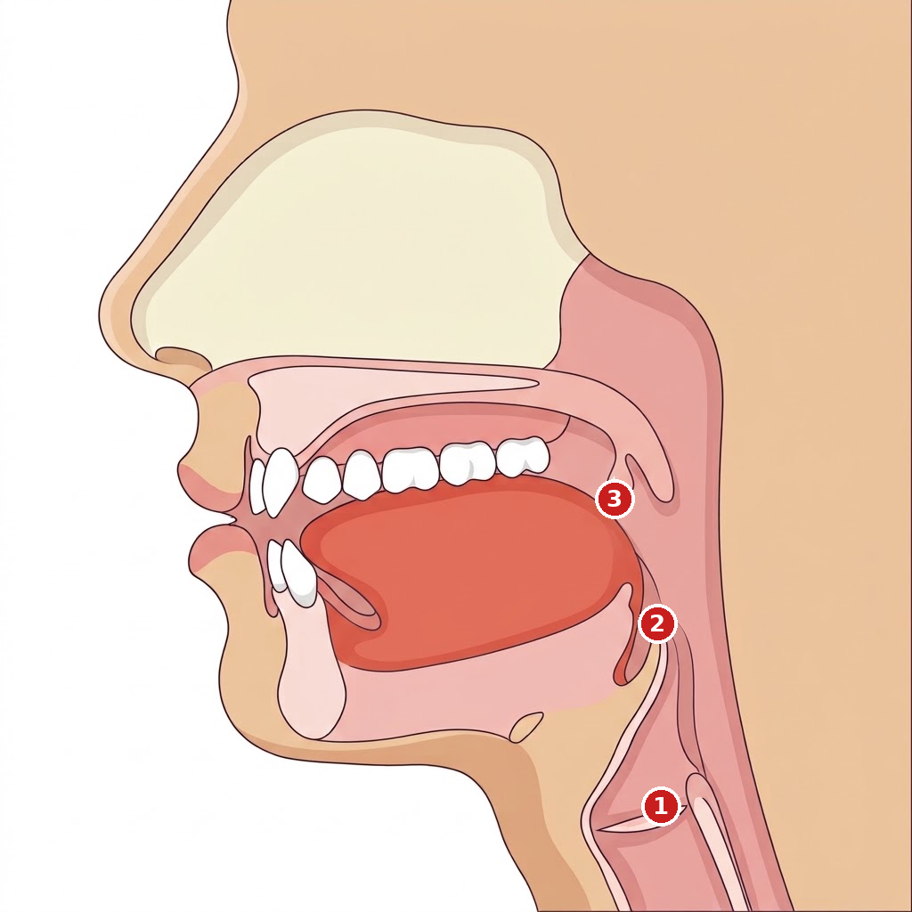
الحلق: (١) أقصى الحلق: ء هـ (٢) وسط الحلق: ع ح (٣) أدنى الحلق: غ خ. لاحظ أن اللسان نائم في قاع الفم.
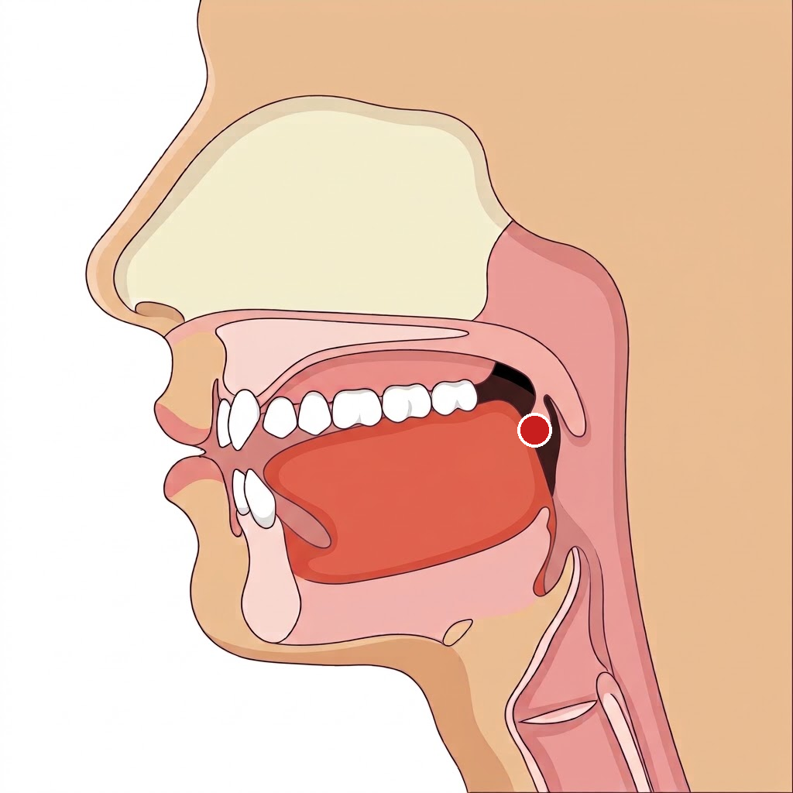
الغين والخاء: مؤخرة اللسان ترتفع نحو اللهاة وتترك فراغاً ضيقاً، ولا تلمسها.
صِرَٰطَ اَ۬لَّذِينَ أَنۡعَمۡتَ عَلَيۡهِمۡ
سُورَةُ ٱلْفَاتِحَةِ – الآية 6 (عد البصرة) · وفي مصحف حفص: 7 (1)
غَيۡرِ اِ۬لۡمَغۡضُوبِ عَلَيۡهِمۡ وَلَا اَ۬لضَّآلِّينَ
سُورَةُ ٱلْفَاتِحَةِ – الآية 7 (عد البصرة) (1)
ثانياً: أقصى اللسان – القاف والكاف
القاف (ق): ارفع مؤخرة لسانك حتى تلمس أقصى سقف الفم (الجزء اللين من السقف). الكاف (ك): المكان نفسه لكن قليلاً إلى الأمام، حيث يبدأ الجزء الصلب من السقف. الفرق بين «قَلْب» و«كَلْب» هو سنتيمتر واحد في مؤخرة اللسان.
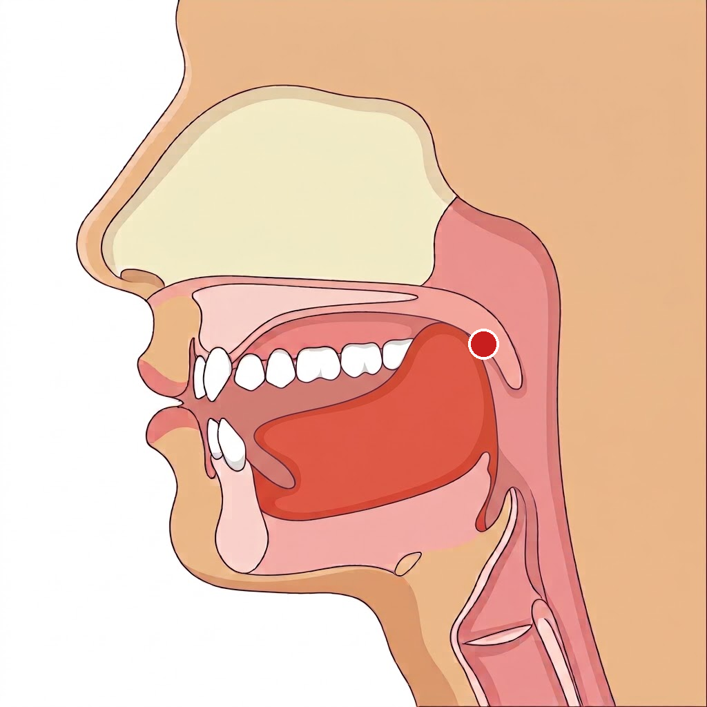
القاف: مؤخرة اللسان تلمس آخر سقف الفم (الجزء اللين) عند اللهاة.
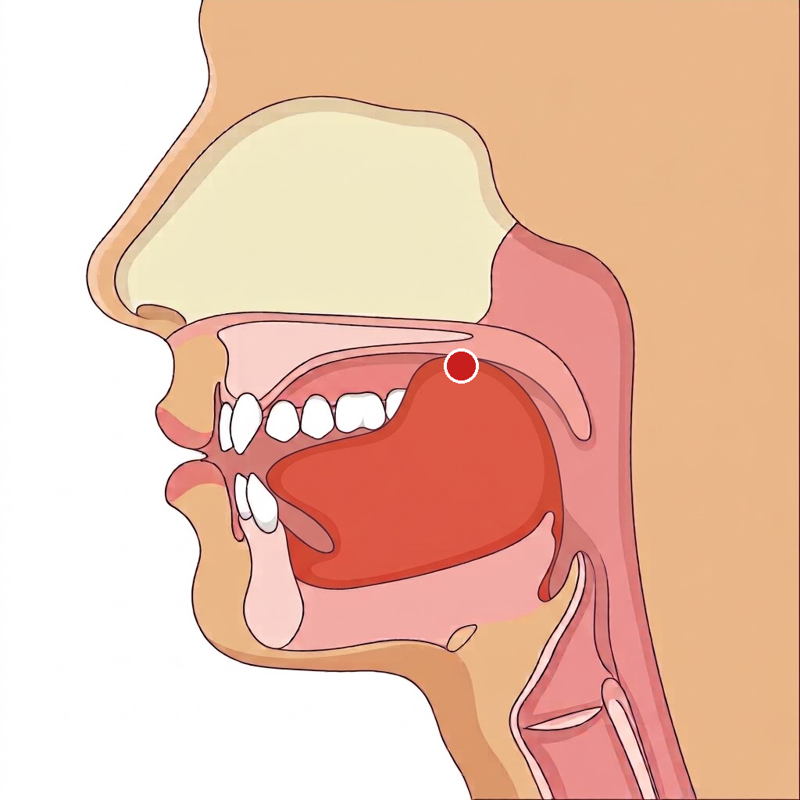
الكاف: مؤخرة اللسان تلمس السقف أمام موضع القاف بقليل.
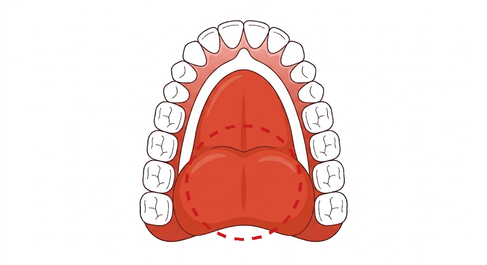
نظرة من أعلى: الجزء الخلفي من اللسان يرتفع ويتسع بين الأضراس.
وَاَلَّذِينَ يُؤۡمِنُونَ بِمَآ أُنزِلَ إِلَيۡكَ وَمَآ أُنزِلَ مِن قَبۡلِكَ وَبِالۡأٓخِرَةِ هُمۡ يُوقِنُونَ
سُورَةُ البَقَرَةِ – الآية 3 (عد البصرة) · وفي مصحف حفص: 4 (2)
اُ۪هۡدِنَا اَ۬لصِّرَٰطَ اَ۬لۡمُسۡتَقِيمَ
سُورَةُ ٱلْفَاتِحَةِ – الآية 5 (عد البصرة) · وفي مصحف حفص: 6 (1)
ثالثاً: وسط اللسان – الجيم والشين والياء
ارفع وسط لسانك (لا الطرف ولا المؤخرة) حتى يقترب من سقف الفم الصلب. الجيم (ج) يلمس السقف لحظة ثم ينفجر الصوت. الشين (ش) لا يلمس بل يترك مسافة ينتشر فيها الهواء. الياء (ي) مثل الشين لكن أضعف.
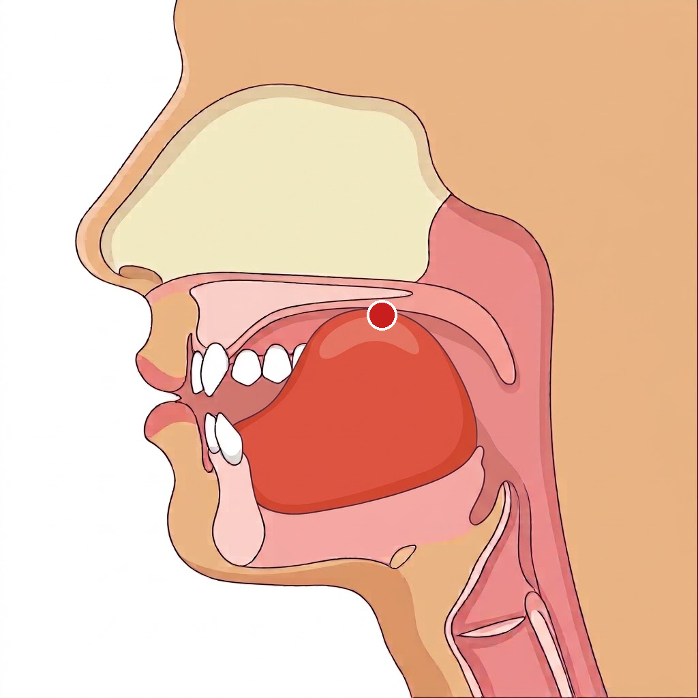
ج ش ي: وسط اللسان يرتفع نحو منتصف سقف الفم؛ الطرف والمؤخرة أخفض منه.
أَوۡ كَصَيِّبٖ مِّنَ اَ۬لسَّمَآءِ فِيهِ ظُلُمَٰتٞ وَرَعۡدٞ وَبَرۡقٞ يَجۡعَلُونَ أَصَٰبِعَهُمۡ فِيٓ ءَاذَانِهِم مِّنَ اَ۬لصَّوَٰعِقِ حَذَرَ اَ۬لۡمَوۡتِۚ وَاَللَّهُ مُحِيطُۢ بِالۡكٰ۪فِرِينَ
سُورَةُ البَقَرَةِ – الآية 18 (عد البصرة) · وفي مصحف حفص: 19 (2)
وَاَلشَّمۡسِ وَضُحۭىٰهَا
سُورَةُ الشَّمۡسِ – الآية 1 (عد البصرة) (91)
رابعاً: حافة اللسان – الضاد
الضاد (ض) حرف خاص بالعربية، ولا يُرى في الصورة الجانبية لأنه يخرج من الجانب: اضغط بحافة لسانك (اليمنى أو اليسرى أو كلتيهما) على الأضراس العليا، وأخرج الصوت وهو ممتد على طول الحافة. لا تنطقها دالاً غليظة، فالدال من طرف اللسان والضاد من حافته.
الضاد: حافتا اللسان (بالأحمر) تلتصقان بالأضراس العليا من الجانبين.
غَيۡرِ اِ۬لۡمَغۡضُوبِ عَلَيۡهِمۡ وَلَا اَ۬لضَّآلِّينَ
سُورَةُ ٱلْفَاتِحَةِ – الآية 7 (عد البصرة) (1)
خامساً: طرف اللسان مع اللثة – اللام والنون والراء
هذه الثلاثة يلمس فيها مقدم اللسان اللثة (اللحم الذي فوق الأسنان العليا من الداخل). اللام (ل): بحافة مقدم اللسان، والصوت يخرج من الجانبين. النون (ن): بطرف اللسان، والصوت يخرج من الأنف (هذه هي الغنة). الراء (ر): بطرف اللسان مع ارتعاشة واحدة خفيفة؛ لا تكررها.
ل ن ر: طرف اللسان يرتفع ويلمس اللثة خلف الأسنان العليا، وباقي اللسان منخفض.
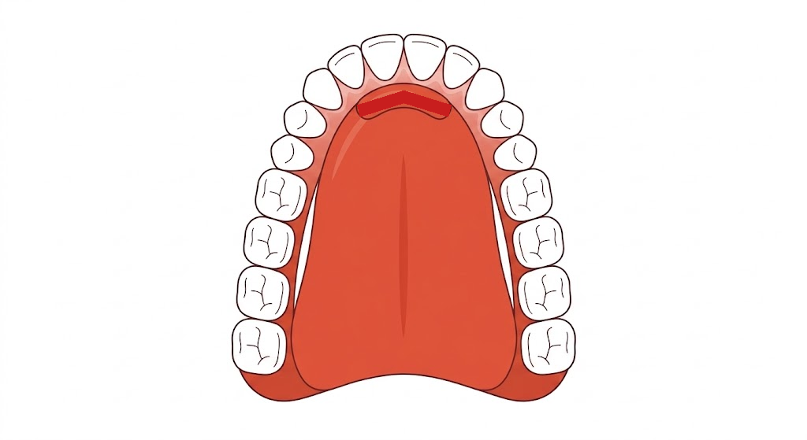
اللام: حافة مقدمة اللسان (بالأحمر) على اللثة.
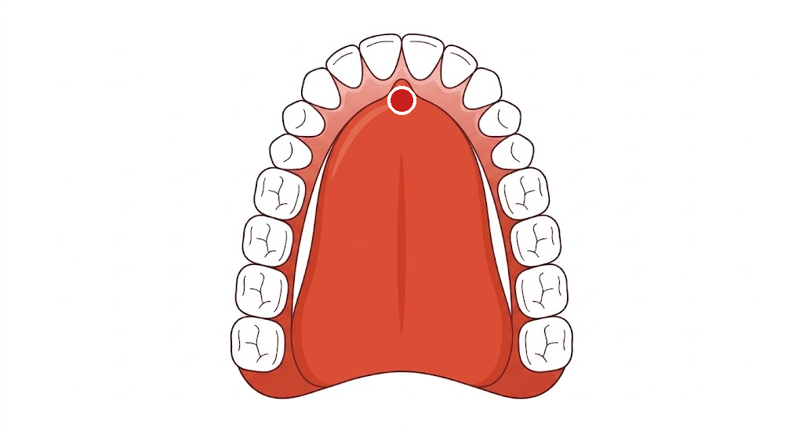
النون والراء: طرف اللسان فقط.
اِ۬لۡحَمۡدُ لِلَّهِ رَبِّ اِ۬لۡعَٰلَمِينَ
سُورَةُ ٱلْفَاتِحَةِ – الآية 1 (عد البصرة) · وفي مصحف حفص: 2 (1)
سادساً: طرف اللسان مع أصول الأسنان – الطاء والدال والتاء
اضغط بطرف لسانك على المكان الذي تلتقي فيه الأسنان العليا باللثة (جذور الأسنان). التاء (ت) خفيفة ومهموسة. الدال (د) مثلها لكن بصوت أقوى. الطاء (ط) مثل التاء لكن مع رفع مؤخرة اللسان فيخرج الصوت غليظاً؛ ولهذا تسمى الطاء «تاء مفخمة».
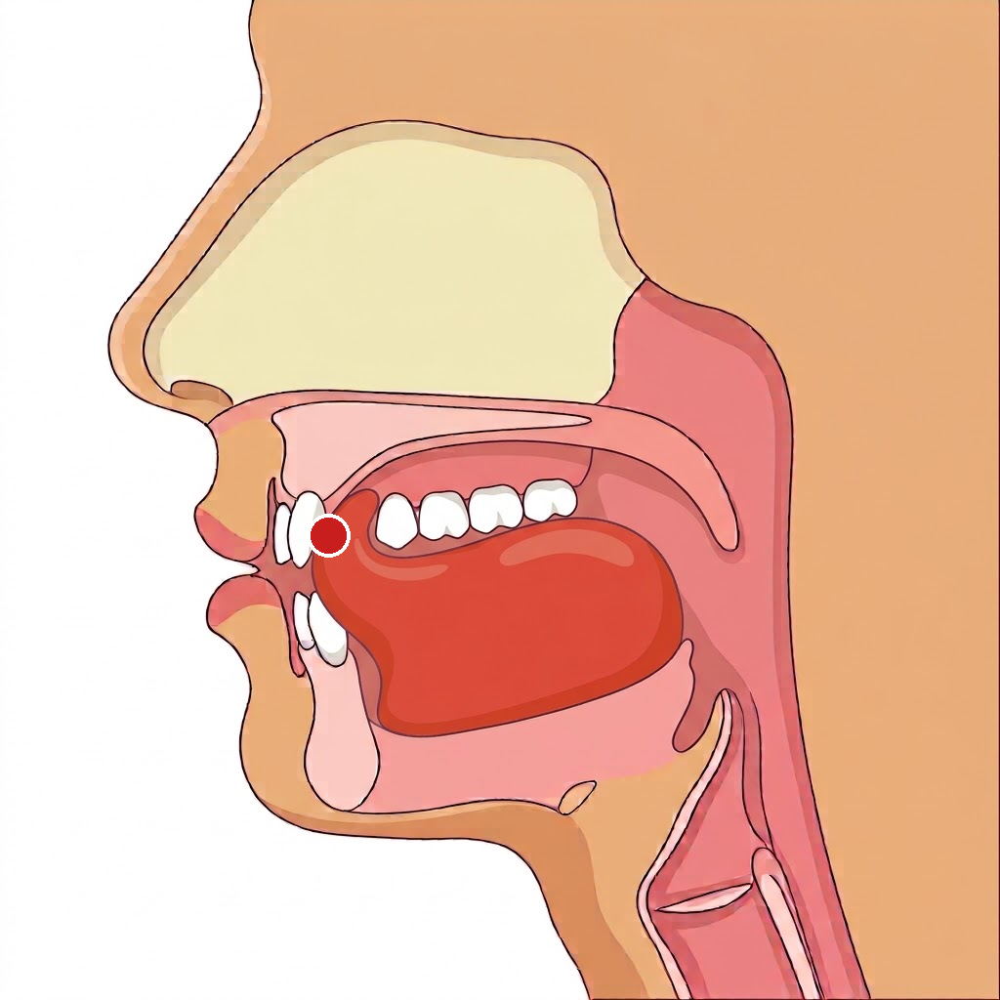
ط د ت: طرف اللسان على الأسنان العليا من الخلف عند التقائها باللثة (أخفض قليلاً من موضع اللام والنون).
اُ۪هۡدِنَا اَ۬لصِّرَٰطَ اَ۬لۡمُسۡتَقِيمَ
سُورَةُ ٱلْفَاتِحَةِ – الآية 5 (عد البصرة) · وفي مصحف حفص: 6 (1)
خَتَمَ اَ۬للَّهُ عَلَىٰ قُلُوبِهِمۡ وَعَلَىٰ سَمۡعِهِمۡۖ وَعَلَىٰٓ أَبۡصٰ۪رِهِمۡ غِشَٰوَةٞۖ وَلَهُمۡ عَذَابٌ عَظِيمٞ
سُورَةُ البَقَرَةِ – الآية 6 (عد البصرة) · وفي مصحف حفص: 7 (2)
اَ۬لَّذِينَ يَنقُضُونَ عَهۡدَ اَ۬للَّهِ مِنۢ بَعۡدِ مِيثَٰقِهِۦ وَيَقۡطَعُونَ مَآ أَمَرَ اَ۬للَّهُ بِهِۦٓ أَن يُوصَلَ وَيُفۡسِدُونَ فِي اِ۬لۡأَرۡضِۚ أُوْلَٰٓئِكَ هُمُ اُ۬لۡخَٰسِرُونَ
سُورَةُ البَقَرَةِ – الآية 26 (عد البصرة) · وفي مصحف حفص: 27 (2)
سابعاً: طرف اللسان قرب الأسنان السفلى – الصاد والسين والزاي
ضع طرف لسانك خلف الأسنان السفلى مباشرة وقرّب اللسان من الأسنان العليا دون أن يلمسها، واترك الهواء يمر في فتحة ضيقة فيُسمع صوت يشبه الصفير. السين (س) خفيفة. الزاي (ز) مثلها بصوت من الحنجرة. الصاد (ص) مثل السين مع رفع مؤخرة اللسان فتغلظ.
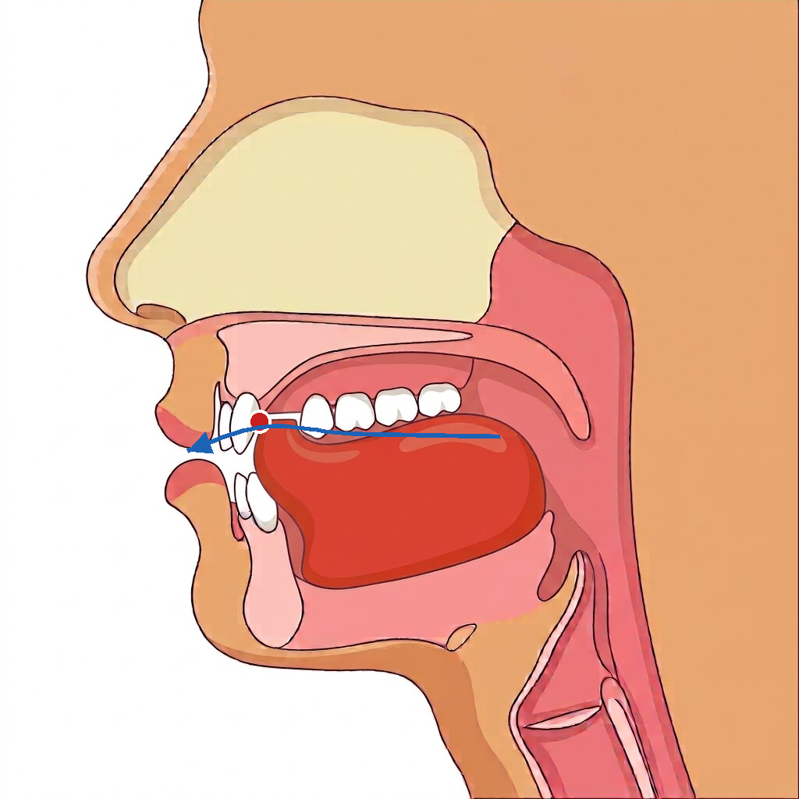
ص س ز: مقدمة اللسان تقترب من الأسنان العليا ولا تلمسها، والهواء يمر في الشق الضيق (السهم الأزرق) فيُسمع الصفير.
اُ۪هۡدِنَا اَ۬لصِّرَٰطَ اَ۬لۡمُسۡتَقِيمَ
سُورَةُ ٱلْفَاتِحَةِ – الآية 5 (عد البصرة) · وفي مصحف حفص: 6 (1)
فِي قُلُوبِهِم مَّرَضٞ فَزَادَهُمُ اُ۬للَّهُ مَرَضٗاۖ وَلَهُمۡ عَذَابٌ أَلِيمُۢ بِمَا كَانُواْ يُكَذِّبُونَ
سُورَةُ البَقَرَةِ – الآية 9 (عد البصرة) · وفي مصحف حفص: 10 (2)
اُ۪هۡدِنَا اَ۬لصِّرَٰطَ اَ۬لۡمُسۡتَقِيمَ
سُورَةُ ٱلْفَاتِحَةِ – الآية 5 (عد البصرة) · وفي مصحف حفص: 6 (1)
ثامناً: طرف اللسان بين الأسنان – الظاء والذال والثاء
أخرج طرف لسانك قليلاً بين أسنانك العليا والسفلى حتى يلمس أطراف الأسنان العليا. الثاء (ث) بهواء فقط (كالكلمة الإنجليزية think). الذال (ذ) بصوت من الحنجرة (كالكلمة this). الظاء (ظ) مثل الذال مع رفع مؤخرة اللسان فتغلظ. إذا لم يخرج طرف لسانك بين أسنانك فأنت تنطق سيناً أو زاياً لا ثاءً أو ذالاً.
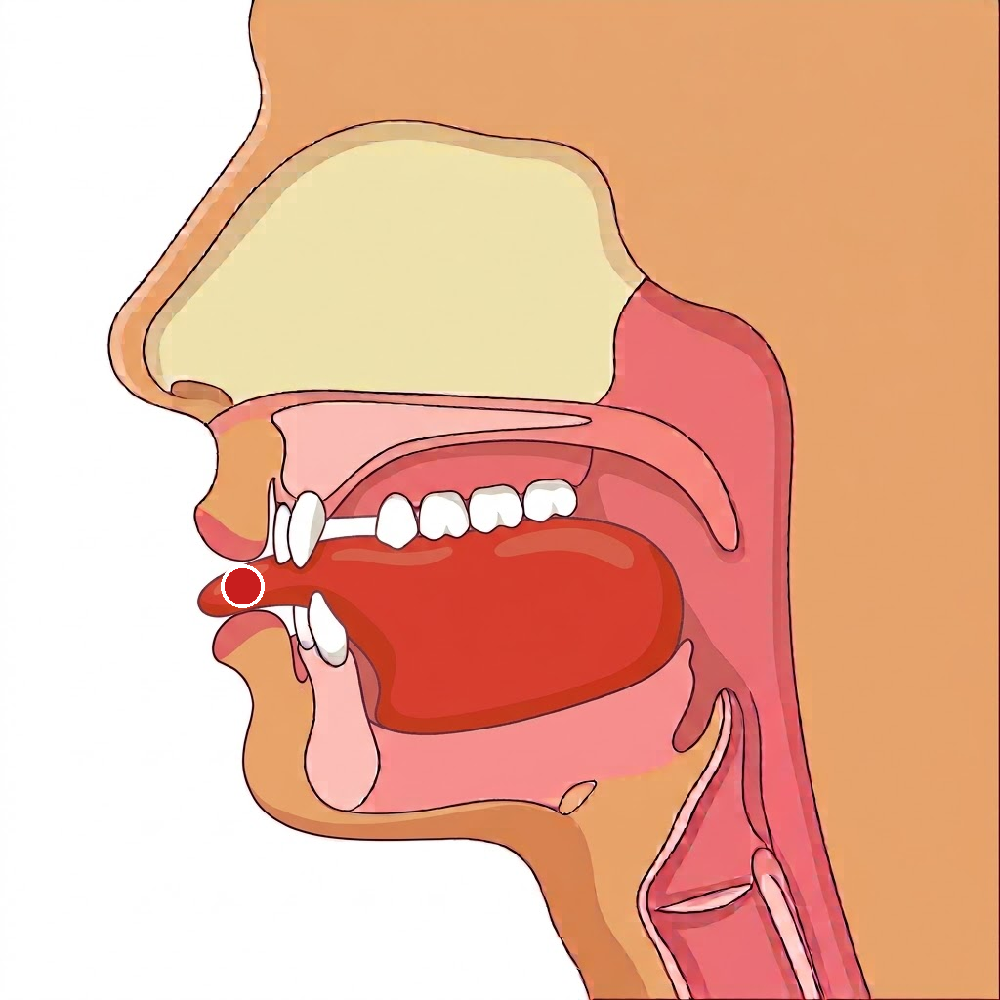
ظ ذ ث: طرف اللسان يخرج بين الأسنان ويلمس أطراف الأسنان العليا.
اِ۬لۡحَمۡدُ لِلَّهِ رَبِّ اِ۬لۡعَٰلَمِينَ
سُورَةُ ٱلْفَاتِحَةِ – الآية 1 (عد البصرة) · وفي مصحف حفص: 2 (1)
الٓمٓۚ ذَٰلِكَ اَ۬لۡكِتَٰبُ لَا رَيۡبَۛ فِيهِۛ هُدٗى لِّلۡمُتَّقِينَ
سُورَةُ البَقَرَةِ – الآية 1 (عد البصرة) · وفي مصحف حفص: 2 (2)
خَتَمَ اَ۬للَّهُ عَلَىٰ قُلُوبِهِمۡ وَعَلَىٰ سَمۡعِهِمۡۖ وَعَلَىٰٓ أَبۡصٰ۪رِهِمۡ غِشَٰوَةٞۖ وَلَهُمۡ عَذَابٌ عَظِيمٞ
سُورَةُ البَقَرَةِ – الآية 6 (عد البصرة) · وفي مصحف حفص: 7 (2)
تاسعاً: الشفتان – الفاء والباء والميم والواو
الفاء (ف): ضع أسنانك العليا على شفتك السفلى من الداخل. الباء (ب) والميم (م): أطبق شفتيك معاً؛ الفرق أن الميم يخرج صوتها من الأنف. الواو (و): دوّر شفتيك كأنك تصفر دون أن تغلقهما.
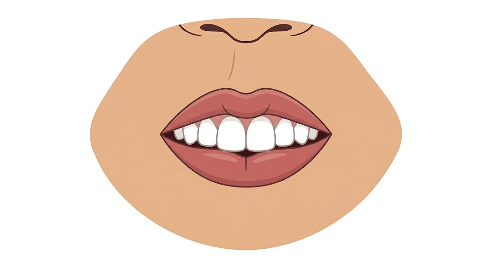
الفاء: الأسنان العليا على الشفة السفلى.
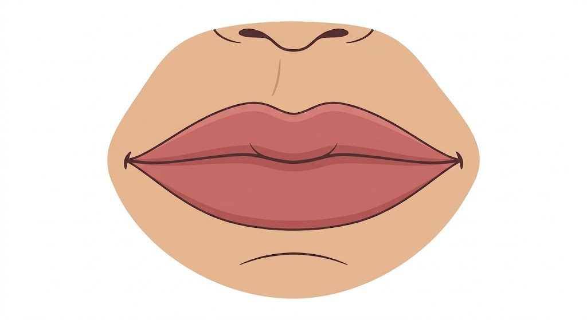
الباء والميم: الشفتان مطبقتان.
الواو: الشفتان مستديرتان إلى الأمام.
أَلَمۡ تَرَ كَيۡفَ فَعَلَ رَبُّكَ بِأَصۡحَٰبِ اِ۬لۡفِيلِ
سُورَةُ الفِيلِ – الآية 1 (عد البصرة) (105)
اِ۬لَّذِيٓ أَطۡعَمَهُم مِّن جُوعٖ
سُورَةُ قُرَيۡشٍ – الآية 4 (عد البصرة) (106)
عاشراً: الجوف والخيشوم
الجوف: هو الفراغ داخل الفم والحلق، ومنه تخرج حروف المد الثلاثة (ا و ي الساكنتان)؛ لا يلمس اللسان فيها شيئاً، والصوت يجري حراً حتى تقطعه. الخيشوم: هو داخل الأنف، ومنه تخرج الغنة التي ترافق النون والميم.
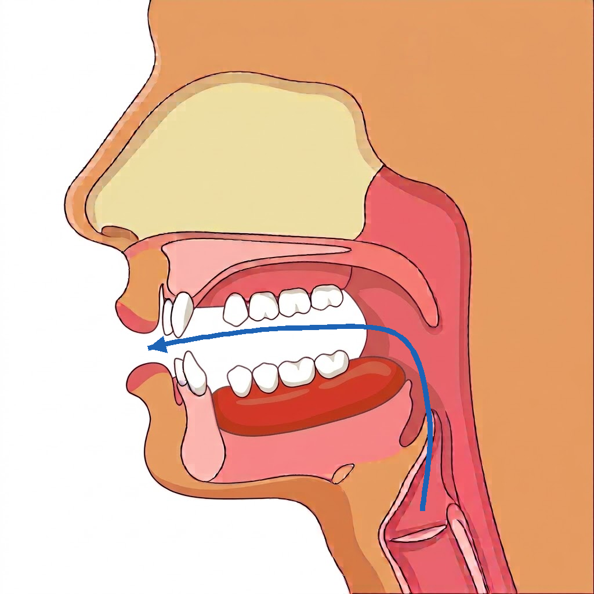
الجوف: الصوت (السهم) يجري في فراغ الفم دون أن يعترضه اللسان.
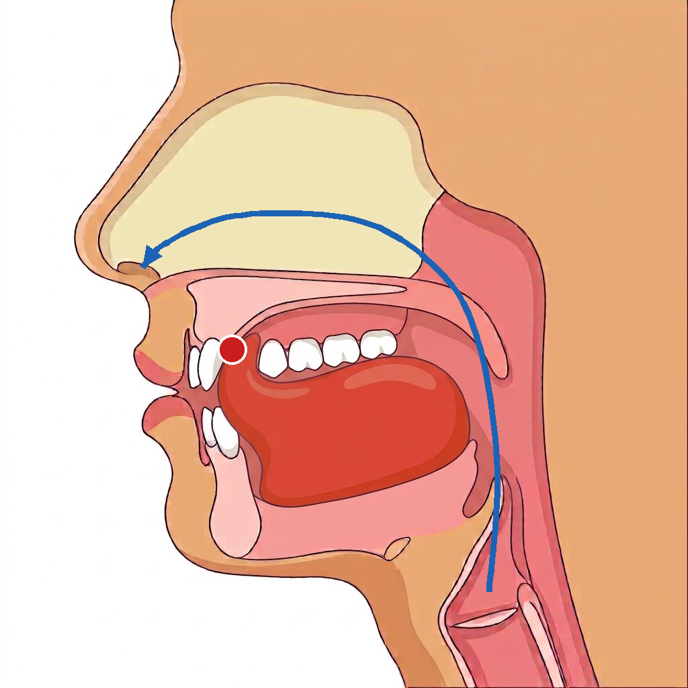
الغنة: اللسان يسد الفم عند اللثة، فيخرج الصوت من الأنف (السهم).
تِلۡكَ مِنۡ أَنۢبَآءِ اِ۬لۡغَيۡبِ نُوحِيهَآ إِلَيۡكَۖ مَا كُنتَ تَعۡلَمُهَآ أَنتَ وَلَا قَوۡمُكَ مِن قَبۡلِ هَٰذَاۖ فَاَصۡبِرۡۖ إِنَّ اَ۬لۡعَٰقِبَةَ لِلۡمُتَّقِينَ
سُورَةُ هُودٍ – الآية 49 (عد البصرة) (11)
٥. الحروف الغليظة والحروف الرقيقة
سبعة حروف غليظة دائماً
هذه السبعة تخرج دائماً بصوت غليظ ضخم: خ ص ض غ ط ق ظ (يجمعها الحفاظ في كلمات: خُصَّ ضَغْطٍ قِظْ). وسبب الغلظة: أن مؤخرة اللسان ترتفع نحو سقف الفم فيمتلئ الفم بالصوت. وسائر الحروف رقيقة، ترتخي فيها مؤخرة اللسان. الصورتان توضحان الفرق.
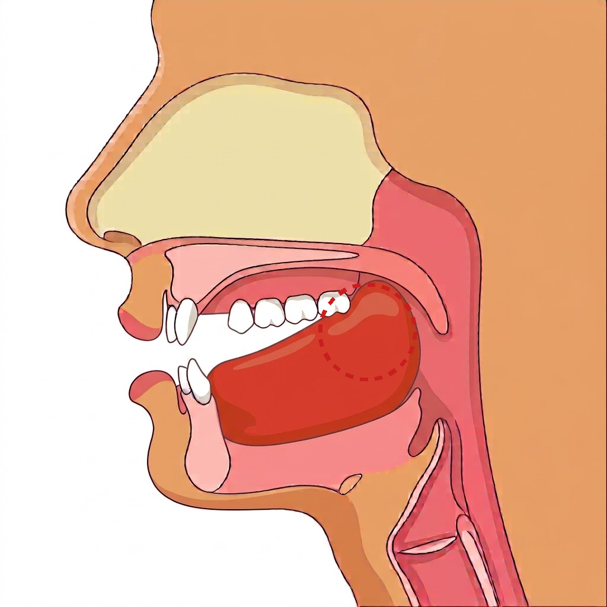
حرف غليظ (مفخم): مؤخرة اللسان مرتفعة (الدائرة).
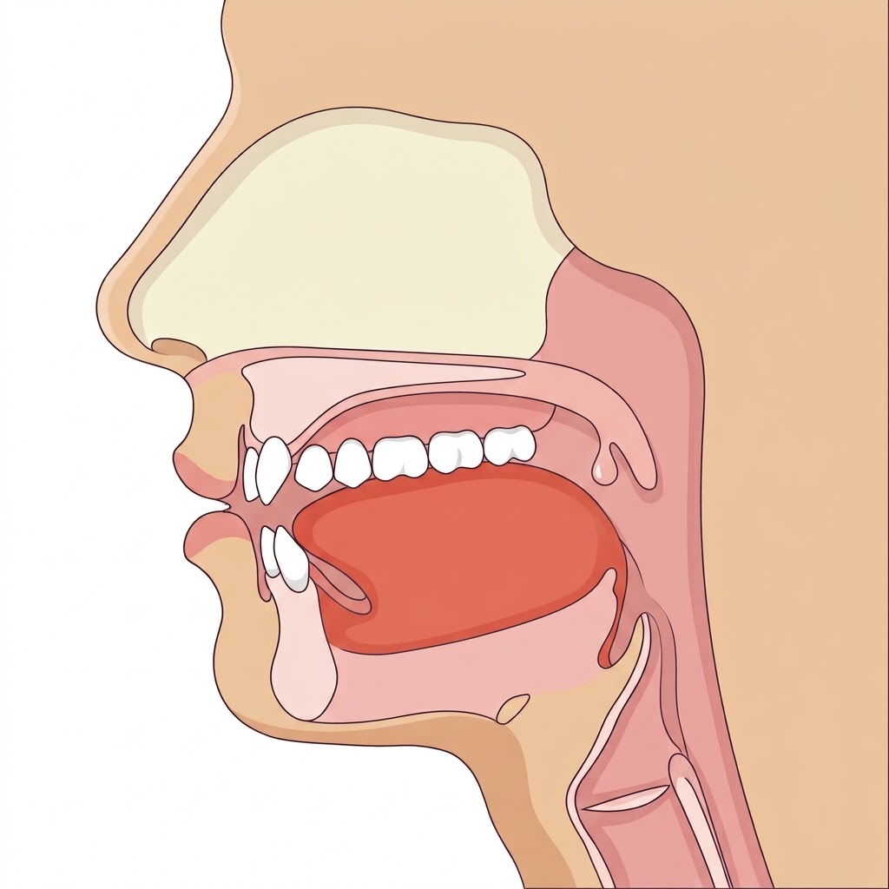
حرف رقيق (مرقق): اللسان منبسط منخفض.
فَإِذَا جَآءَتِ اِ۬لطَّآمَّةُ اُ۬لۡكُبۡر۪يٰ
سُورَةُ النَّازِعَاتِ – الآية 34 (عد البصرة) (79)
غَيۡرِ اِ۬لۡمَغۡضُوبِ عَلَيۡهِمۡ وَلَا اَ۬لضَّآلِّينَ
سُورَةُ ٱلْفَاتِحَةِ – الآية 7 (عد البصرة) (1)
الراء: أحياناً غليظة وأحياناً رقيقة
القاعدة المبسطة: إذا كان على الراء فتحة أو ضمة، أو كانت ساكنة وقبلها فتحة أو ضمة، فهي غليظة («رَبّ»، «الرَّحمن»). وإذا كان عليها كسرة، أو كانت ساكنة وقبلها كسرة، فهي رقيقة («رِزْق»، «فِرْعَون»). والقاعدة الكاملة فيها تفاصيل تتعلمها لاحقاً.
اِ۬لۡحَمۡدُ لِلَّهِ رَبِّ اِ۬لۡعَٰلَمِينَ
سُورَةُ ٱلْفَاتِحَةِ – الآية 1 (عد البصرة) · وفي مصحف حفص: 2 (1)
اَ۬لَّذِينَ يُؤۡمِنُونَ بِالۡغَيۡبِ وَيُقِيمُونَ اَ۬لصَّلَوٰةَ وَمِمَّا رَزَقۡنَٰهُمۡ يُنفِقُونَ
سُورَةُ البَقَرَةِ – الآية 2 (عد البصرة) · وفي مصحف حفص: 3 (2)
وَإِذۡ نَجَّيۡنَٰكُم مِّنۡ ءَالِ فِرۡعَوۡنَ يَسُومُونَكُمۡ سُوٓءَ اَ۬لۡعَذَابِ يُذَبِّحُونَ أَبۡنَآءَكُمۡ وَيَسۡتَحۡيُونَ نِسَآءَكُمۡۚ وَفِي ذَٰلِكُم بَلَآءٞ مِّن رَّبِّكُمۡ عَظِيمٞ
سُورَةُ البَقَرَةِ – الآية 48 (عد البصرة) · وفي مصحف حفص: 49 (2)
لام كلمة (الله)
كل اللامات رقيقة إلا لام كلمة (الله) فإنها تغلظ إذا كان قبلها فتحة أو ضمة («قَالَ اللهُ»، «هُوَ اللهُ»)، وترقق إذا كان قبلها كسرة («بِسْمِ اللهِ»، «لِلَّهِ»).
قُلۡ هُوَ اَ۬للَّهُ أَحَدٌ
سُورَةُ الإِخۡلَاصِ – الآية 1 (عد البصرة) (112)
اِ۬لۡحَمۡدُ لِلَّهِ رَبِّ اِ۬لۡعَٰلَمِينَ
سُورَةُ ٱلْفَاتِحَةِ – الآية 1 (عد البصرة) · وفي مصحف حفص: 2 (1)
٦. القاعدة الكبرى: النون الساكنة والتنوين
هذه أهم قاعدة في التجويد وأكثرها تكراراً. السؤال دائماً واحد: ما هو الحرف الذي يأتي بعد النون الساكنة (أو التنوين)؟ الجواب يحدد ماذا تفعل بالنون. أربعة احتمالات فقط.
الاحتمال الأول: انطق النون واضحة (الإظهار)
إذا كان الحرف الذي بعد النون واحداً من حروف الحلق الستة (ء هـ ع ح غ خ) فانطق النون واضحة كاملة، ثم انطق الحرف الذي بعدها. لماذا؟ لأن النون من طرف اللسان وحروف الحلق من الحلق، والمسافة بينهما بعيدة فلا يتداخلان. في المصحف: تجد على النون علامة السكون (نْ).
صِرَٰطَ اَ۬لَّذِينَ أَنۡعَمۡتَ عَلَيۡهِمۡ
سُورَةُ ٱلْفَاتِحَةِ – الآية 6 (عد البصرة) · وفي مصحف حفص: 7 (1)
وَلَمۡ يَكُن لَّهُۥ كُفُؤًا أَحَدُۢ
سُورَةُ الإِخۡلَاصِ – الآية 4 (عد البصرة) (112)
مَّا يَوَدُّ اُ۬لَّذِينَ كَفَرُواْ مِنۡ أَهۡلِ اِ۬لۡكِتَٰبِ وَلَا اَ۬لۡمُشۡرِكِينَ أَن يُنزَلَ عَلَيۡكُم مِّنۡ خَيۡرٖ مِّن رَّبِّكُمۡۗ وَاَللَّهُ يَخۡتَصُّ بِرَحۡمَتِهِۦ مَن يَشَآءُۚ وَاَللَّهُ ذُو اُ۬لۡفَضۡلِ …
سُورَةُ البَقَرَةِ – الآية 104 (عد البصرة) · وفي مصحف حفص: 105 (2)
الاحتمال الثاني: أذِب النون في الحرف بعدها (الإدغام)
إذا كان بعد النون أحد هذه الحروف الستة: ي ر م ل و ن (يجمعها الحفاظ في كلمة «يَرْمَلُون») فلا تنطق النون أصلاً، بل انتقل مباشرة إلى الحرف الذي بعدها وشدده. مع (ي ن م و) أبقِ رنين الأنف (الغنة) لمدة حركتين؛ ومع (ل ر) لا رنين إطلاقاً. في المصحف: النون بلا سكون، والحرف بعدها عليه شدة.
أُوْلَٰٓئِكَ عَلَىٰ هُدٗى مِّن رَّبِّهِمۡۖ وَأُوْلَٰٓئِكَ هُمُ اُ۬لۡمُفۡلِحُونَ
سُورَةُ البَقَرَةِ – الآية 4 (عد البصرة) · وفي مصحف حفص: 5 (2)
الٓمٓۚ ذَٰلِكَ اَ۬لۡكِتَٰبُ لَا رَيۡبَۛ فِيهِۛ هُدٗى لِّلۡمُتَّقِينَ
سُورَةُ البَقَرَةِ – الآية 1 (عد البصرة) · وفي مصحف حفص: 2 (2)
فَمَن يَعۡمَلۡ مِثۡقَالَ ذَرَّةٍ خَيۡرٗا يَرَهُۥ
سُورَةُ الزَّلۡزَلَةِ – الآية 7 (عد البصرة) (99)
وَاَللَّهُ خَلَقَ كُلَّ دَآبَّةٖ مِّن مَّآءٖۖ فَمِنۡهُم مَّن يَمۡشِي عَلَىٰ بَطۡنِهِۦ وَمِنۡهُم مَّن يَمۡشِي عَلَىٰ رِجۡلَيۡنِ وَمِنۡهُم مَّن يَمۡشِي عَلَىٰٓ أَرۡبَعٖۚ يَخۡلُقُ …
سُورَةُ النُّورِ – الآية 43 (عد البصرة) · وفي مصحف حفص: 45 (24)
الاحتمال الثالث: حوّل النون إلى ميم (الإقلاب)
إذا كان بعد النون حرف الباء (ب) فقط: انطق بدل النون ميماً خفيفة مع رنين الأنف لمدة حركتين، وشفتاك متلامستان برفق. السبب: النون والباء لا يلتقيان بسهولة، والميم قريبة من الباء (كلاهما من الشفتين). في المصحف: ميم صغيرة فوق النون أو مكان التنوين.
قَالَ يَٰٓـَٔادَمُ أَنۢبِئۡهُم بِأَسۡمَآئِهِمۡۖ فَلَمَّآ أَنۢبَأَهُم بِأَسۡمَآئِهِمۡ قَالَ أَلَمۡ أَقُل لَّكُمۡ إِنِّيَ أَعۡلَمُ غَيۡبَ اَ۬لسَّمَٰوَٰتِ وَاَلۡأَرۡضِ وَأَعۡلَمُ مَا تُبۡدُونَ وَمَا كُنتُمۡ تَكۡتُمُونَ
سُورَةُ البَقَرَةِ – الآية 32 (عد البصرة) · وفي مصحف حفص: 33 (2)
اَ۬لَّذِينَ يَنقُضُونَ عَهۡدَ اَ۬للَّهِ مِنۢ بَعۡدِ مِيثَٰقِهِۦ وَيَقۡطَعُونَ مَآ أَمَرَ اَ۬للَّهُ بِهِۦٓ أَن يُوصَلَ وَيُفۡسِدُونَ فِي اِ۬لۡأَرۡضِۚ أُوْلَٰٓئِكَ هُمُ اُ۬لۡخَٰسِرُونَ
سُورَةُ البَقَرَةِ – الآية 26 (عد البصرة) · وفي مصحف حفص: 27 (2)
… أَن تُؤَدُّواْ اُ۬لۡأَمَٰنَٰتِ إِلَىٰٓ أَهۡلِهَا وَإِذَا حَكَمۡتُم بَيۡنَ اَ۬لنّ۪اسِ أَن تَحۡكُمُواْ بِالۡعَدۡلِۚ إِنَّ اَ۬للَّهَ نِع۪مَّا يَعِظُكُم بِهِۦٓۗ إِنَّ اَ۬للَّهَ كَانَ سَمِيعَۢا بَصِيرٗا
سُورَةُ النِّسَاءِ – الآية 57 (عد البصرة) · وفي مصحف حفص: 58 (4)
الاحتمال الرابع: أخفِ النون (الإخفاء)
إذا كان بعد النون أي حرف من الحروف الخمسة عشر الباقية (ت ث ج د ذ ز س ش ص ض ط ظ ف ق ك): لا تُلصق طرف لسانك باللثة كما في النون العادية، بل اتركه معلقاً قريباً من مخرج الحرف التالي، وأخرج رنيناً من الأنف لمدة حركتين، ثم انطق الحرف. الصوت الناتج ليس نوناً واضحة وليس مدغمة، بل شيء بينهما. في المصحف: النون بلا سكون والحرف بعدها بلا شدة.
وَإِن كُنتُمۡ فِي رَيۡبٖ مِّمَّا نَزَّلۡنَا عَلَىٰ عَبۡدِنَا فَأۡتُواْ بِسُورَةٖ مِّن مِّثۡلِهِۦ وَاَدۡعُواْ شُهَدَآءَكُم مِّن دُونِ اِ۬للَّهِ إِن كُنتُمۡ صَٰدِقِينَ
سُورَةُ البَقَرَةِ – الآية 22 (عد البصرة) · وفي مصحف حفص: 23 (2)
وَاَلَّذِينَ يُؤۡمِنُونَ بِمَآ أُنزِلَ إِلَيۡكَ وَمَآ أُنزِلَ مِن قَبۡلِكَ وَبِالۡأٓخِرَةِ هُمۡ يُوقِنُونَ
سُورَةُ البَقَرَةِ – الآية 3 (عد البصرة) · وفي مصحف حفص: 4 (2)
وَأَنزَلۡنَا مِنَ اَ۬لۡمُعۡصِرَٰتِ مَآءٗ ثَجَّاجٗا
سُورَةُ النَّبَإِ – الآية 14 (عد البصرة) (78)
اَ۬لَّذِينَ يُؤۡمِنُونَ بِالۡغَيۡبِ وَيُقِيمُونَ اَ۬لصَّلَوٰةَ وَمِمَّا رَزَقۡنَٰهُمۡ يُنفِقُونَ
سُورَةُ البَقَرَةِ – الآية 2 (عد البصرة) · وفي مصحف حفص: 3 (2)
ملخص في جدول ذهني
انظر إلى الحرف بعد النون: حرف حلق (ء هـ ع ح غ خ) = انطقها واضحة. يرملون (ي ر م ل و ن) = أذبها. باء = حوّلها ميماً. غير ذلك = أخفِها بغنة. وهذه القاعدة واحدة في رواية الدوري ورواية حفص لا تختلف.
٧. الميم الساكنة
نفس فكرة النون الساكنة، لكن الاحتمالات ثلاثة فقط.
إذا جاء بعد الميم الساكنة باء: أخفِها
أطبق شفتيك برفق وأخرج رنين الأنف لمدة حركتين ثم انطق الباء. مثل «تَرْمِيهِمْ بِحِجَارَة».
تَرۡمِيهِم بِحِجَارَةٖ مِّن سِجِّيلٖ
سُورَةُ الفِيلِ – الآية 4 (عد البصرة) (105)
وَمِنَ اَ۬لنّ۪اسِ مَن يَقُولُ ءَامَنَّا بِاللَّهِ وَبِالۡيَوۡمِ اِ۬لۡأٓخِرِ وَمَا هُم بِمُؤۡمِنِينَ
سُورَةُ البَقَرَةِ – الآية 7 (عد البصرة) · وفي مصحف حفص: 8 (2)
إذا جاء بعدها ميم: أذِبها
لا تنطق ميمين بل ميماً واحدة مشددة مع رنين الأنف حركتين. مثل «أَطْعَمَهُم مِّن جُوع».
اِ۬لَّذِيٓ أَطۡعَمَهُم مِّن جُوعٖ
سُورَةُ قُرَيۡشٍ – الآية 4 (عد البصرة) (106)
… يَطۡعَمۡهُ فَإِنَّهُۥ مِنِّيَ إِلَّا مَنِ اِ۪غۡتَرَفَ غَرۡفَةَۢ بِيَدِهِۦۚ فَشَرِبُواْ مِنۡهُ إِلَّا قَلِيلٗا مِّنۡهُمۡۚ فَلَمَّا جَاوَزَهُۥ هُوَ وَاَلَّذِينَ ءَامَنُواْ مَعَهُۥ قَالُواْ لَا طَاقَةَ لَنَا اَ۬لۡيَوۡمَ بِجَالُوتَ وَجُنُودِهِۦۚ قَالَ اَ۬لَّذِينَ يَظُنُّونَ أَنَّهُم مُّلَٰقُواْ اُ۬للَّهِ كَم مِّن فِئَةٖ قَلِيلَةٍ غَلَبَتۡ فِئَةٗ …
سُورَةُ البَقَرَةِ – الآية 247 (عد البصرة) · وفي مصحف حفص: 249 (2)
إذا جاء بعدها أي حرف آخر: انطقها واضحة
أطبق الشفتين وافتحهما بوضوح ثم انطق الحرف التالي، بلا رنين زائد. واحذر خاصة عند الواو والفاء، لأنهما من الشفتين أيضاً فيميل اللسان إلى إخفاء الميم عندهما وهذا خطأ.
غَيۡرِ اِ۬لۡمَغۡضُوبِ عَلَيۡهِمۡ وَلَا اَ۬لضَّآلِّينَ
سُورَةُ ٱلْفَاتِحَةِ – الآية 7 (عد البصرة) (1)
لَكُمۡ دِينُكُمۡ وَلِي دِينِ
سُورَةُ الكَافِرُونَ – الآية 6 (عد البصرة) (109)
٨. الغنة والحروف المشددة والقلقلة
النون والميم إذا كان عليهما شدة
كلما رأيت نوناً أو ميماً عليها شدة (نّ / مّ) فاضغط عليها وأطل رنين الأنف بمقدار حركتين، سواء وصلت الكلمة بما بعدها أو وقفت عليها. هذا أقوى أنواع الغنة.
إِنَّ اَ۬لَّذِينَ كَفَرُواْ سَوَآءٌ عَلَيۡهِمۡ ءَٰا۬نذَرۡتَهُمۡ أَمۡ لَمۡ تُنذِرۡهُمۡ لَا يُؤۡمِنُونَ
سُورَةُ البَقَرَةِ – الآية 5 (عد البصرة) · وفي مصحف حفص: 6 (2)
كَيۡفَ تَكۡفُرُونَ بِاللَّهِ وَكُنتُمۡ أَمۡوَٰتٗا فَأَحۡيَٰكُمۡۖ ثُمَّ يُمِيتُكُمۡ ثُمَّ يُحۡيِيكُمۡ ثُمَّ إِلَيۡهِ تُرۡجَعُونَ
سُورَةُ البَقَرَةِ – الآية 27 (عد البصرة) · وفي مصحف حفص: 28 (2)
عَمَّ يَتَسَآءَلُونَ
سُورَةُ النَّبَإِ – الآية 1 (عد البصرة) (78)
القلقلة: خمسة حروف تهتز إذا سكنت
خمسة حروف: ق ط ب ج د (يجمعها الحفاظ في «قُطْبُ جَد»). إذا جاء أحدها ساكناً (بلا حركة) فلا يمكن نطقه بلا صوت، فأخرجه بنبرة اهتزاز خفيفة، كأنك تضغط على الحرف ثم تفلته. مثل الباء في «أَبْصَارِهِمْ» والدال في «قَدْ». وتكون أقوى إذا وقفت على الكلمة، كالقاف في «الفَلَقْ».
خَتَمَ اَ۬للَّهُ عَلَىٰ قُلُوبِهِمۡ وَعَلَىٰ سَمۡعِهِمۡۖ وَعَلَىٰٓ أَبۡصٰ۪رِهِمۡ غِشَٰوَةٞۖ وَلَهُمۡ عَذَابٌ عَظِيمٞ
سُورَةُ البَقَرَةِ – الآية 6 (عد البصرة) · وفي مصحف حفص: 7 (2)
قُلۡ أَعُوذُ بِرَبِّ اِ۬لۡفَلَقِ
سُورَةُ الفَلَقِ – الآية 1 (عد البصرة) (113)
تَبَّتۡ يَدَآ أَبِي لَهَبٖ وَتَبَّ
سُورَةُ المَسَدِ – الآية 1 (عد البصرة) (111)
٩. كم أطول الصوت؟ (المد)
تذكر: الحركة الواحدة هي زمن نطق حرف متحرك. وكل حروف المد (ا و ي) تُمد على الأقل حركتين. السؤال: متى تمد أكثر؟
المد العادي: حركتان
حرف مد ليس بعده همزة ولا سكون: مده حركتين فقط، لا أقل ولا أكثر. هذا أكثر أنواع المد في القرآن.
أَلَمۡ تَرَ كَيۡفَ فَعَلَ رَبُّكَ بِأَصۡحَٰبِ اِ۬لۡفِيلِ
سُورَةُ الفِيلِ – الآية 1 (عد البصرة) (105)
إذا جاءت الهمزة بعد المد في كلمة أخرى: حركتان (أو أربع)
مثل «بِمَا أُنزِلَ»: الألف في آخر «بِمَا» وبعدها همزة في أول «أُنزِلَ». عند الدوري تمدها حركتين (كالعادي) ويجوز أربع؛ وأهل السودان غالباً يقصرون (حركتين). أما عند حفص فتُمد أربعاً أو خمساً. هذا أول فرق واضح ستسمعه بين القراءتين.
وَاَلَّذِينَ يُؤۡمِنُونَ بِمَآ أُنزِلَ إِلَيۡكَ وَمَآ أُنزِلَ مِن قَبۡلِكَ وَبِالۡأٓخِرَةِ هُمۡ يُوقِنُونَ
سُورَةُ البَقَرَةِ – الآية 3 (عد البصرة) · وفي مصحف حفص: 4 (2)
إِنَّآ أَعۡطَيۡنَٰكَ اَ۬لۡكَوۡثَرَ
سُورَةُ الكَوۡثَرِ – الآية 1 (عد البصرة) (108)
إذا جاءت الهمزة بعد المد في الكلمة نفسها: أربع حركات
مثل «السَّمَاء»، «جَاء»: مد أربع حركات عند الدوري (وعند حفص أربع أو خمس).
أَوۡ كَصَيِّبٖ مِّنَ اَ۬لسَّمَآءِ فِيهِ ظُلُمَٰتٞ وَرَعۡدٞ وَبَرۡقٞ يَجۡعَلُونَ أَصَٰبِعَهُمۡ فِيٓ ءَاذَانِهِم مِّنَ اَ۬لصَّوَٰعِقِ حَذَرَ اَ۬لۡمَوۡتِۚ وَاَللَّهُ مُحِيطُۢ بِالۡكٰ۪فِرِينَ
سُورَةُ البَقَرَةِ – الآية 18 (عد البصرة) · وفي مصحف حفص: 19 (2)
إِذَا جَآءَ نَصۡرُ اُ۬للَّهِ وَاَلۡفَتۡحُ
سُورَةُ النَّصۡرِ – الآية 1 (عد البصرة) (110)
إذا جاء بعد المد حرف مشدد: ست حركات
مثل «الضَّالِّين»، «الحَاقَّة»: هذا أطول مد، ست حركات، عند جميع القراء.
غَيۡرِ اِ۬لۡمَغۡضُوبِ عَلَيۡهِمۡ وَلَا اَ۬لضَّآلِّينَ
سُورَةُ ٱلْفَاتِحَةِ – الآية 7 (عد البصرة) (1)
اِ۬لۡحَآقَّةُ مَا اَ۬لۡحَآقَّةُ
سُورَةُ الحَاقَّةِ – الآية 1 (عد البصرة) · وفي مصحف حفص: 2 (69)
إذا وقفت على كلمة آخرها مد ثم حرف: حركتان أو أربع أو ست
مثل الوقف على «العَالَمِين» و«الرَّحِيم»: اختر حركتين أو أربعاً أو ستاً، والزم اختيارك في القراءة كلها.
اِ۬لۡحَمۡدُ لِلَّهِ رَبِّ اِ۬لۡعَٰلَمِينَ
سُورَةُ ٱلْفَاتِحَةِ – الآية 1 (عد البصرة) · وفي مصحف حفص: 2 (1)
اَ۬لرَّحۡمَٰنِ اِ۬لرَّحِيمِ
سُورَةُ ٱلْفَاتِحَةِ – الآية 2 (عد البصرة) · وفي مصحف حفص: 3 (1)
الحروف في أوائل السور
مثل «الٓمٓ» و«قٓ» و«نٓ»: تنطق أسماء الحروف (ألف لام ميم / قاف / نون) وتمد الحرف الذي فيه مد ست حركات. والحروف ذات الحرفين (طه، يس، حم) تمد حركتين فقط.
الٓمٓۚ ذَٰلِكَ اَ۬لۡكِتَٰبُ لَا رَيۡبَۛ فِيهِۛ هُدٗى لِّلۡمُتَّقِينَ
سُورَةُ البَقَرَةِ – الآية 1 (عد البصرة) · وفي مصحف حفص: 2 (2)
نٓۚ وَاَلۡقَلَمِ وَمَا يَسۡطُرُونَ
سُورَةُ القَلَمِ – الآية 1 (عد البصرة) (68)
طه۪ۚ مَآ أَنزَلۡنَا عَلَيۡكَ اَ۬لۡقُرۡءَانَ لِتَشۡقۭيٰٓ
سُورَةُ طه – الآية 1 (عد البصرة) · وفي مصحف حفص: 2 (20)
١٠. الهمزة عند الدوري (تخفيف الهمز)
أوضح ما يميز رواية الدوري في السمع: أنها تخفف الهمزة حين تجتمع همزتان. ومصحف الدوري يكتب هذه الحالات بعلامات خاصة.
همزتان في كلمة واحدة: نصف همزة مع ألف بينهما
مثل «أَأَنذَرْتَهُمْ»: عند حفص تنطق همزتين قويتين متتاليتين. عند الدوري: انطق الهمزة الأولى قوية، ثم مد ألفاً قصيرة، ثم انطق الثانية نصف نطق (تسهيل)، كأنك تقول «أَا-اَنذرتهم». في المصحف: ألف صغيرة بعد الأولى، ونقطة مستديرة على الثانية.
إِنَّ اَ۬لَّذِينَ كَفَرُواْ سَوَآءٌ عَلَيۡهِمۡ ءَٰا۬نذَرۡتَهُمۡ أَمۡ لَمۡ تُنذِرۡهُمۡ لَا يُؤۡمِنُونَ
سُورَةُ البَقَرَةِ – الآية 5 (عد البصرة) · وفي مصحف حفص: 6 (2)
وَإِن تَعۡجَب فَّعَجَبٞ قَوۡلُهُمۡ أَٰ۟ذَا كُنَّا تُرَٰبًا أَٰ۟نَّا لَفِي خَلۡقٖ جَدِيدٍ
سُورَةُ الرَّعۡدِ – الآية 5 (عد البصرة) (13)
همزتان في كلمتين بنفس الحركة: أسقط الأولى
مثل «هَؤُلَاءِ إِنْ»: الهمزة الأولى في آخر «هؤلاء» والثانية في أول «إن»، وكلتاهما مكسورة. عند الدوري لا تنطق الأولى أصلاً: «هَؤُلَا إِن». والمصحف يحذفها من الكتابة. أما إذا اختلفت حركتاهما فتُنطق الأولى وتُخفف الثانية.
وَعَلَّمَ ءَادَمَ اَ۬لۡأَسۡمَآءَ كُلَّهَا ثُمَّ عَرَضَهُمۡ عَلَى اَ۬لۡمَلَٰٓئِكَةِ فَقَالَ أَنۢبِـُٔونِي بِأَسۡمَآءِ هَٰٓؤُلَآ إِن كُنتُمۡ صَٰدِقِينَ
سُورَةُ البَقَرَةِ – الآية 30 (عد البصرة) · وفي مصحف حفص: 31 (2)
وَإِذَا قِيلَ لَهُمۡ ءَامِنُواْ كَمَآ ءَامَنَ اَ۬لنَّاسُ قَالُوٓاْ أَنُؤۡمِنُ كَمَآ ءَامَنَ اَ۬لسُّفَهَآءُۗ اَ۬لَآ إِنَّهُمۡ هُمُ اُ۬لسُّفَهَآءُ وَلَٰكِن لَّا يَعۡلَمُونَ
سُورَةُ البَقَرَةِ – الآية 12 (عد البصرة) · وفي مصحف حفص: 13 (2)
كلمات مخصوصة
«أَاِنَّ لَنَا لَأَجْرًا» في الأعراف: عند الدوري بهمزة استفهام مخففة، وعند حفص «إِنَّ لَنَا» بهمزة واحدة. و«ءَاعْجَمِيٌّ» في فصلت: بألف بين الهمزتين عند الدوري.
وَجَآءَ اَ۬لسَّحَرَةُ فِرۡعَوۡنَ قَالُوٓاْ أَٰ۟نَّ لَنَا لَأَجۡرًا إِن كُنَّا نَحۡنُ اُ۬لۡغَٰلِبِينَ
سُورَةُ الأَعۡرَافِ – الآية 112 (عد البصرة) · وفي مصحف حفص: 113 (7)
وَلَوۡ جَعَلۡنَٰهُ قُرۡءَانًا أَعۡجَمِيّٗا لَّقَالُواْ لَوۡلَا فُصِّلَتۡ ءَايَٰتُهُۥٓۖ ءَٰا۬عۡجَمِيّٞ وَعَرَبِيّٞۗ قُلۡ هُوَ لِلَّذِينَ ءَامَنُواْ هُدٗى وَشِفَآءٞۚ وَاَلَّذِينَ لَا يُؤۡمِنُونَ فِيٓ ءَاذَانِهِمۡ وَقۡرٞ …
سُورَةُ فُصِّلَتۡ – الآية 43 (عد البصرة) · وفي مصحف حفص: 44 (41)
الهمزة الساكنة: انطقها كاملة
الدوري ينطق الهمزة الساكنة كاملة مثل حفص («يُؤْمِنُون»، «البَأْس»). (الراوي الآخر عن أبي عمرو، السوسي، يحولها إلى مد: يُومِنُون؛ فلا تخلط بينهما).
اَ۬لَّذِينَ يُؤۡمِنُونَ بِالۡغَيۡبِ وَيُقِيمُونَ اَ۬لصَّلَوٰةَ وَمِمَّا رَزَقۡنَٰهُمۡ يُنفِقُونَ
سُورَةُ البَقَرَةِ – الآية 2 (عد البصرة) · وفي مصحف حفص: 3 (2)
كلمات تُسكَّن عند الدوري
«بَارِئْكُمْ» بتسكين الهمزة، و«يَأْمُرْكُمْ» بتسكين الراء (وكذلك «تَأْمُرْهُمْ»، «يَنصُرْكُمْ»، «يُشْعِرْكُمْ»). أما حفص فيحركها.
… يَٰقَوۡمِ إِنَّكُمۡ ظَلَمۡتُمۡ أَنفُسَكُم بِاتِّخَاذِكُمُ اُ۬لۡعِجۡلَ فَتُوبُوٓاْ إِلَىٰ بَارِئۡكُمۡ فَاَقۡتُلُوٓاْ أَنفُسَكُمۡ ذَٰلِكُمۡ خَيۡرٞ لَّكُمۡ عِندَ بَارِئۡكُمۡ فَتَابَ عَلَيۡكُمۡۚ إِنَّهُۥ هُوَ اَ۬لتَّوَّابُ اُ۬لرَّحِيمُ
سُورَةُ البَقَرَةِ – الآية 53 (عد البصرة) · وفي مصحف حفص: 54 (2)
… اُ۬لطُّورَ خُذُواْ مَآ ءَاتَيۡنَٰكُم بِقُوَّةٖ وَاَسۡمَعُواْۖ قَالُواْ سَمِعۡنَا وَعَصَيۡنَا وَأُشۡرِبُواْ فِي قُلُوبِهِمِ اِ۬لۡعِجۡلَ بِكُفۡرِهِمۡۚ قُلۡ بِئۡسَمَا يَأۡمُرۡكُم بِهِۦٓ إِيمَٰنُكُمۡ إِن كُنتُم مُّؤۡمِنِينَ
سُورَةُ البَقَرَةِ – الآية 92 (عد البصرة) · وفي مصحف حفص: 93 (2)
١١. الإمالة (صوت القراءة السودانية)
الإمالة هي أوضح ما يميز صوت قارئ الدوري. وهي ليست حرفاً جديداً، بل هي طريقة في نطق الألف والفتحة: تميل بهما نحو الياء والكسرة.
كيف تنطق الإمالة
قل «نَار» بفتح فمك تماماً. الآن قل الكلمة نفسها وأنت تضيّق فتحة فمك قليلاً وترفع مقدم لسانك نحو سقف الفم: سيخرج الصوت بين «نار» و«نير». هذه هي الإمالة. لا تبالغ حتى تصير ياءً صريحة، ولا تقصّر حتى تبقى ألفاً صريحة؛ بل في المنتصف. وأفضل طريقة لإتقانها: سماع قارئ متقن وتقليده.
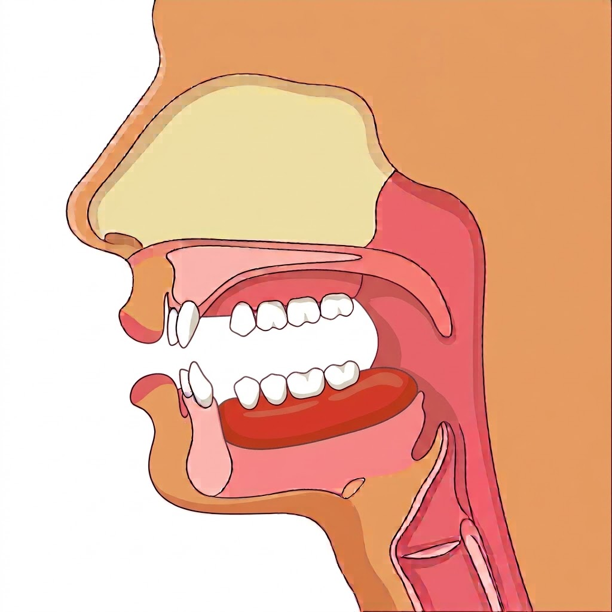
ألف عادية: الفم مفتوح واللسان منبسط.
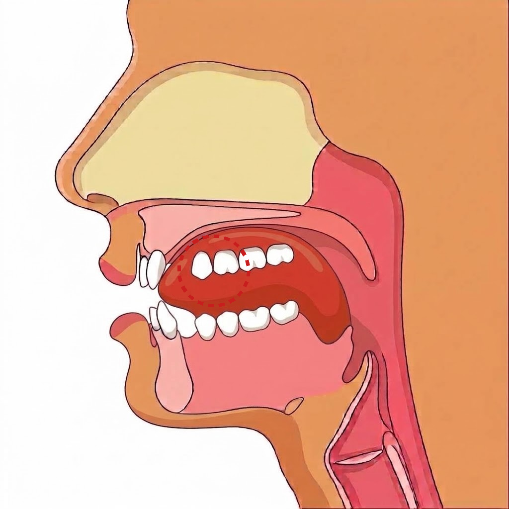
ألف ممالة: مقدم اللسان مرتفع نحو السقف (الدائرة)، والفم أضيق.
أين تُمال؟ (١) الألف التي بعدها راء مكسورة في آخر الكلمة
مثل «النَّارِ»، «الأَبْرَارِ»، «الدَّارِ»، «القَهَّارِ». الشرط أن تكون الراء مكسورة؛ فإن كانت مفتوحة أو مضمومة («النَّارَ»، «النَّارُ») فلا إمالة. في مصحف الدوري: معين صغير (◊) تحت الحرف الممال.
وَاَلَّذِينَ كَفَرُواْ وَكَذَّبُواْ بِـَٔايَٰتِنَآ أُوْلَٰٓئِكَ أَصۡحَٰبُ اُ۬لنّ۪ارِۖ هُمۡ فِيهَا خَٰلِدُونَ
سُورَةُ البَقَرَةِ – الآية 38 (عد البصرة) · وفي مصحف حفص: 39 (2)
رَّبَّنَآ إِنَّنَا سَمِعۡنَا مُنَادِيٗا يُنَادِي لِلۡإِيمَٰنِ أَنۡ ءَامِنُواْ بِرَبِّكُمۡ فَـَٔامَنَّاۚ رَبَّنَا فَاَغۡفِر لَّنَا ذُنُوبَنَا وَكَفِّرۡ عَنَّا سَيِّـَٔاتِنَا وَتَوَفَّنَا مَعَ اَ۬لۡأَبۡر۪ارِ
سُورَةُ آلِ عِمۡرَانَ – الآية 193 (عد البصرة) (3)
قَالُواْ يَٰمُوسۭيٰٓ إِنَّ فِيهَا قَوۡمٗا جَبَّارِينَ وَإِنَّا لَن نَّدۡخُلَهَا حَتَّىٰ يَخۡرُجُواْ مِنۡهَا فَإِن يَخۡرُجُواْ مِنۡهَا فَإِنَّا دَٰخِلُونَ
سُورَةُ المَائـِدَةِ – الآية 24 (عد البصرة) · وفي مصحف حفص: 22 (5)
(٢) كلمة الكافرين
«الكَافِرِين» و«كَافِرِين» (بالياء) تُمال ألفها حيث وقعت في القرآن.
أَوۡ كَصَيِّبٖ مِّنَ اَ۬لسَّمَآءِ فِيهِ ظُلُمَٰتٞ وَرَعۡدٞ وَبَرۡقٞ يَجۡعَلُونَ أَصَٰبِعَهُمۡ فِيٓ ءَاذَانِهِم مِّنَ اَ۬لصَّوَٰعِقِ حَذَرَ اَ۬لۡمَوۡتِۚ وَاَللَّهُ مُحِيطُۢ بِالۡكٰ۪فِرِينَ
سُورَةُ البَقَرَةِ – الآية 18 (عد البصرة) · وفي مصحف حفص: 19 (2)
إِنَّآ أَعۡتَدۡنَا لِلۡكٰ۪فِرِينَ سَلَٰسِلَا۠ وَأَغۡلَٰلٗا وَسَعِيرًا
سُورَةُ الإِنسَانِ – الآية 4 (عد البصرة) (76)
(٣) الألف المقصورة إذا كان قبلها راء
مثل «بُشْرَى»، «النَّصَارَى»، «سُكَارَى»، «أَدْرَاك»، «تَرَى»، «يَرَى». أما الألف المقصورة التي ليس قبلها راء («الهُدَى»، «مُوسَى») فتنطق ألفاً عادية عند الدوري.
قُلۡ مَن كَانَ عَدُوّٗا لِّـجِبۡرِيلَ فَإِنَّهُۥ نَزَّلَهُۥ عَلَىٰ قَلۡبِكَ بِإِذۡنِ اِ۬للَّهِ مُصَدِّقٗا لِّمَا بَيۡنَ يَدَيۡهِ وَهُدٗى وَبُشۡر۪يٰ لِلۡمُؤۡمِنِينَ
سُورَةُ البَقَرَةِ – الآية 96 (عد البصرة) · وفي مصحف حفص: 97 (2)
وَقَالَتِ اِ۬لۡيَهُودُ لَيۡسَتِ اِ۬لنَّصَٰر۪يٰ عَلَىٰ شَيۡءٖ وَقَالَتِ اِ۬لنَّصَٰر۪يٰ لَيۡسَتِ اِ۬لۡيَهُودُ عَلَىٰ شَيۡءٖ وَهُمۡ يَتۡلُونَ اَ۬لۡكِتَٰبَۗ كَذَٰلِكَ قَالَ اَ۬لَّذِينَ لَا يَعۡلَمُونَ مِثۡلَ قَوۡلِهِمۡۚ …
سُورَةُ البَقَرَةِ – الآية 112 (عد البصرة) · وفي مصحف حفص: 113 (2)
وَإِذۡ ءَاتَيۡنَا مُوسَى اَ۬لۡكِتَٰبَ وَاَلۡفُرۡقَانَ لَعَلَّكُمۡ تَهۡتَدُونَ
سُورَةُ البَقَرَةِ – الآية 52 (عد البصرة) · وفي مصحف حفص: 53 (2)
(٤) كلمة الناس إذا كانت مكسورة الآخر
هذه خاصة بالدوري وحده: «النَّاسِ» (بكسر السين) تُمال ألفها. فإذا كانت «النَّاسُ» أو «النَّاسَ» فلا إمالة. قارن بين الآيتين في الصورتين: علامة الإمالة تحت النون في المكسورة فقط.
وَمِنَ اَ۬لنّ۪اسِ مَن يَقُولُ ءَامَنَّا بِاللَّهِ وَبِالۡيَوۡمِ اِ۬لۡأٓخِرِ وَمَا هُم بِمُؤۡمِنِينَ
سُورَةُ البَقَرَةِ – الآية 7 (عد البصرة) · وفي مصحف حفص: 8 (2)
يَٰٓأَيُّهَا اَ۬لنَّاسُ اُ۟عۡبُدُواْ رَبَّكُمُ اُ۬لَّذِي خَلَقَكُمۡ وَاَلَّذِينَ مِن قَبۡلِكُمۡ لَعَلَّكُمۡ تَتَّقُونَ
سُورَةُ البَقَرَةِ – الآية 20 (عد البصرة) · وفي مصحف حفص: 21 (2)
قُلۡ أَعُوذُ بِرَبِّ اِ۬لنّ۪اسِ
سُورَةُ النَّاسِ – الآية 1 (عد البصرة) (114)
١٢. فروق أخرى تميز الدوري عن حفص
كلها بسيطة، ومصحف الدوري يكتبها كما تُنطق.
لا وقفات خاطفة (لا سكت)
في رواية حفص أربعة مواضع يقف فيها القارئ وقفة خاطفة بلا تنفس (مثل «عِوَجًا» ثم «قَيِّمًا» في الكهف). عند الدوري لا شيء من ذلك: تصل الكلمتين وتطبق القاعدة العادية (فتخفي التنوين قبل القاف، وتُدغم نون «مَنْ» في راء «رَاقٍ»).
اِ۬لۡحَمۡدُ لِلَّهِ اِ۬لَّذِيٓ أَنزَلَ عَلَىٰ عَبۡدِهِ اِ۬لۡكِتَٰبَ وَلَمۡ يَجۡعَل لَّهُۥ عِوَجٗا
سُورَةُ الكَهۡفِ – الآية 1 (عد البصرة) (18)
قَيِّمٗا لِّيُنذِرَ بَأۡسٗا شَدِيدٗا مِّن لَّدُنۡهُ وَيُبَشِّرَ اَ۬لۡمُؤۡمِنِينَ اَ۬لَّذِينَ يَعۡمَلُونَ اَ۬لصَّٰلِحَٰتِ أَنَّ لَهُمۡ أَجۡرًا حَسَنٗا
سُورَةُ الكَهۡفِ – الآية 2 (عد البصرة) (18)
وَقِيلَ مَن رَّاقٖ
سُورَةُ القِيَامَةِ – الآية 26 (عد البصرة) · وفي مصحف حفص: 27 (75)
كَلَّاۖ بَل رَّانَ عَلَىٰ قُلُوبِهِم مَّا كَانُواْ يَكۡسِبُونَ
سُورَةُ المُطَفِّفِينَ – الآية 14 (عد البصرة) (83)
ثلاثة حروف تُدغم زيادة عند الدوري
الذال في «إِذْ»، والدال في «قَدْ»، والتاء الساكنة في آخر الفعل (مثل «كَذَّبَتْ»): إذا جاء بعدها حرف قريب منها في المخرج فإن الدوري يذيبها فيه. مثل «فَقَدْ ضَلَّ» تنطق «فَقَضَّلَّ»، و«كَذَّبَتْ ثَمُود» تنطق «كَذَّبَثَّمُود». حفص ينطقها واضحة.
أَمۡ تُرِيدُونَ أَن تَسۡـَٔلُواْ رَسُولَكُمۡ كَمَا سُئِلَ مُوسۭيٰ مِن قَبۡلُۗ وَمَن يَتَبَدَّلِ اِ۬لۡكُفۡرَ بِالۡإِيمَٰنِ فَقَد ضَّلَّ سَوَآءَ اَ۬لسَّبِيلِ
سُورَةُ البَقَرَةِ – الآية 107 (عد البصرة) · وفي مصحف حفص: 108 (2)
كَذَّبَت ثَّمُودُ بِطَغۡوۭىٰهَآ
سُورَةُ الشَّمۡسِ – الآية 11 (عد البصرة) (91)
ياء المتكلم تُفتح قبل الهمزة
مثل «إِنِّي أَعْلَمُ»: عند حفص الياء ساكنة وتمد، وعند الدوري الياء مفتوحة: «إِنِّيَ أَعْلَمُ» فلا مد.
وَإِذۡ قَالَ رَبُّكَ لِلۡمَلَٰٓئِكَةِ إِنِّي جَاعِلٞ فِي اِ۬لۡأَرۡضِ خَلِيفَةٗۖ قَالُوٓاْ أَتَجۡعَلُ فِيهَا مَن يُفۡسِدُ فِيهَا وَيَسۡفِكُ اُ۬لدِّمَآءَ وَنَحۡنُ نُسَبِّحُ بِحَمۡدِكَ وَنُقَدِّسُ لَكَۖ قَالَ إِنِّيَ أَعۡلَمُ مَا لَا تَعۡلَمُونَ
سُورَةُ البَقَرَةِ – الآية 29 (عد البصرة) · وفي مصحف حفص: 30 (2)
ياءات محذوفة تُنطق عند الوصل
مثل «الدَّاعِ إِذَا دَعَانِ»: عند الدوري تنطق «الدَّاعِي إِذَا دَعَانِي» إذا وصلت، وتحذف الياء إذا وقفت. حفص يحذفها دائماً. في المصحف: ياء صغيرة.
وَإِذَا سَأَلَكَ عِبَادِي عَنِّي فَإِنِّي قَرِيبٌۖ أُجِيبُ دَعۡوَةَ اَ۬لدَّاعِۦٓ إِذَا دَعَانِۦۖ فَلۡيَسۡتَجِيبُواْ لِي وَلۡيُؤۡمِنُواْ بِي لَعَلَّهُمۡ يَرۡشُدُونَ
سُورَةُ البَقَرَةِ – الآية 185 (عد البصرة) · وفي مصحف حفص: 186 (2)
هاء الضمير في كلمات مخصوصة
«يُؤَدِّهْ إِلَيْكَ» بتسكين الهاء عند الدوري (حفص: يُؤَدِّهِي). و«يَرْضَهُ لَكُمْ»: عند الدوري تُمد الهاء بواو (يَرْضَهُو) وعند حفص لا تُمد.
۞وَمِنۡ أَهۡلِ اِ۬لۡكِتَٰبِ مَنۡ إِن تَأۡمَنۡهُ بِقِنط۪ارٖ يُؤَدِّهۡ إِلَيۡكَ وَمِنۡهُم مَّنۡ إِن تَأۡمَنۡهُ بِدِين۪ارٖ لَّا يُؤَدِّهۡ إِلَيۡكَ إِلَّا مَا دُمۡتَ عَلَيۡهِ قَآئِمٗاۗ …
سُورَةُ آلِ عِمۡرَانَ – الآية 74 (عد البصرة) · وفي مصحف حفص: 75 (3)
… تَكۡفُرُواْ فَإِنَّ اَ۬للَّهَ غَنِيٌّ عَنكُمۡۖ وَلَا يَرۡضَىٰ لِعِبَادِهِ اِ۬لۡكُفۡرَۖ وَإِن تَشۡكُرُواْ يَرۡضَهُۥ لَكُمۡۗ وَلَا تَزِرُ وَازِرَةٞ وِزۡرَ أُخۡر۪يٰۗ ثُمَّ إِلَىٰ رَبِّكُم مَّرۡجِعُكُمۡ …
سُورَةُ الزُّمَرِ – الآية 8 (عد البصرة) · وفي مصحف حفص: 7 (39)
كلمات تُقرأ بشكل مختلف
«مَلِكِ يَوْمِ الدِّين» (حفص: مَالِكِ). «وَمَا يُخَادِعُونَ إِلَّا أَنفُسَهُمْ» (حفص: يَخْدَعُون). «كَيْفَ نُنشِرُهَا» (حفص: نُنشِزُهَا). «هُزُؤًا» و«كُفُؤًا» بالهمز (حفص: هُزُوًا، كُفُوًا). «ضُعْف» في سورة الروم بضم الضاد (حفص: بالفتح). وفي مصحف الدوري كلها مكتوبة كما تُنطق، فاعتمد على المصحف.
مَلِكِ يَوۡمِ اِ۬لدِّينِ
سُورَةُ ٱلْفَاتِحَةِ – الآية 3 (عد البصرة) · وفي مصحف حفص: 4 (1)
يُخَٰدِعُونَ اَ۬للَّهَ وَاَلَّذِينَ ءَامَنُواْ وَمَا يُخَٰدِعُونَ إِلَّآ أَنفُسَهُمۡ وَمَا يَشۡعُرُونَ
سُورَةُ البَقَرَةِ – الآية 8 (عد البصرة) · وفي مصحف حفص: 9 (2)
… يَتَسَنَّهۡۖ وَاَنظُرۡ إِلَىٰ حِم۪ارِكَ وَلِنَجۡعَلَكَ ءَايَةٗ لِّلنّ۪اسِۖ وَاَنظُرۡ إِلَى اَ۬لۡعِظَامِ كَيۡفَ نُنشِرُهَا ثُمَّ نَكۡسُوهَا لَحۡمٗاۚ فَلَمَّا تَبَيَّنَ لَهُۥ قَالَ أَعۡلَمُ أَنَّ اَ۬للَّهَ …
سُورَةُ البَقَرَةِ – الآية 258 (عد البصرة) · وفي مصحف حفص: 259 (2)
وَلَمۡ يَكُن لَّهُۥ كُفُؤًا أَحَدُۢ
سُورَةُ الإِخۡلَاصِ – الآية 4 (عد البصرة) (112)
۞اَ۬للَّهُ اُ۬لَّذِي خَلَقَكُم مِّن ضُعۡفٖ ثُمَّ جَعَلَ مِنۢ بَعۡدِ ضُعۡفٖ قُوَّةٗ ثُمَّ جَعَلَ مِنۢ بَعۡدِ قُوَّةٖ ضُعۡفٗا وَشَيۡبَةٗۚ يَخۡلُقُ مَا يَشَآءُۖ وَهۡوَ …
سُورَةُ الرُّومِ – الآية 53 (عد البصرة) · وفي مصحف حفص: 54 (30)
١٣. كيف تقف على الكلمة
القاعدة العامة
إذا وقفت على كلمة فسكّن آخر حرف فيها (لا تنطق حركته). والتاء المربوطة (ة) تصير هاء: «رَحْمَة» تقول «رَحْمَهْ». والتنوين بالفتح يصير ألفاً: «أَفْوَاجًا» تقول «أَفْوَاجَا». والتنوين بالضم والكسر يسقط: «عَظِيمٌ» تقول «عَظِيمْ».
وَرَأَيۡتَ اَ۬لنَّاسَ يَدۡخُلُونَ فِي دِينِ اِ۬للَّهِ أَفۡوَاجٗا
سُورَةُ النَّصۡرِ – الآية 2 (عد البصرة) (110)
خَتَمَ اَ۬للَّهُ عَلَىٰ قُلُوبِهِمۡ وَعَلَىٰ سَمۡعِهِمۡۖ وَعَلَىٰٓ أَبۡصٰ۪رِهِمۡ غِشَٰوَةٞۖ وَلَهُمۡ عَذَابٌ عَظِيمٞ
سُورَةُ البَقَرَةِ – الآية 6 (عد البصرة) · وفي مصحف حفص: 7 (2)
وَلَقَدۡ ءَاتَيۡنَا مُوسَى اَ۬لۡكِتَٰبَ مِنۢ بَعۡدِ مَآ أَهۡلَكۡنَا اَ۬لۡقُرُونَ اَ۬لۡأُولۭيٰ بَصَآئِرَ لِلنّ۪اسِ وَهُدٗى وَرَحۡمَةٗ لَّعَلَّهُمۡ يَتَذَكَّرُونَ
سُورَةُ القَصَصِ – الآية 43 (عد البصرة) (28)
علامات الوقف في المصحف
فوق الكلمات علامات صغيرة تدلك أين تقف: (مـ) يجب أن تقف. (لا) لا تقف هنا. (ج) لك أن تقف أو تصل. (صلى) الأفضل أن تصل. (قلى) الأفضل أن تقف. (∴ ∴) نقاط مثلثة مكررة: قف عند إحداهما لا كلتيهما.
الٓمٓۚ ذَٰلِكَ اَ۬لۡكِتَٰبُ لَا رَيۡبَۛ فِيهِۛ هُدٗى لِّلۡمُتَّقِينَ
سُورَةُ البَقَرَةِ – الآية 1 (عد البصرة) · وفي مصحف حفص: 2 (2)
اَ۬للَّهُ لَآ إِلَٰهَ إِلَّا هُوَ اَ۬لۡحَيُّ اُ۬لۡقَيُّومُۚ لَا تَأۡخُذُهُۥ سِنَةٞ وَلَا نَوۡمٞۚ لَّهُۥ مَا فِي اِ۬لسَّمَٰوَٰتِ وَمَا فِي اِ۬لۡأَرۡضِۗ مَن ذَا اَ۬لَّذِي …
سُورَةُ البَقَرَةِ – الآية 253 (عد البصرة) · وفي مصحف حفص: 255 (2)
١٤. تدريب: سورة الفاتحة برواية الدوري خطوة خطوة
طبق كل ما تعلمته على أشهر سورة.
الآية ١
«الحَمْدُ»: اللام واضحة (لأن بعدها حاء)، والميم ساكنة واضحة، والدال متحركة فلا قلقلة. «لِلَّهِ»: لام الله رقيقة لأن قبلها كسرة. «رَبِّ»: راء غليظة (مفتوحة). «العَالَمِين»: ألف مد حركتان، وعند الوقف مد آخر الكلمة ٢ أو ٤ أو ٦.
اِ۬لۡحَمۡدُ لِلَّهِ رَبِّ اِ۬لۡعَٰلَمِينَ
سُورَةُ ٱلْفَاتِحَةِ – الآية 1 (عد البصرة) · وفي مصحف حفص: 2 (1)
الآية ٢
«الرَّحْمَنِ الرَّحِيم»: اللام لا تُنطق (تذوب في الراء المشددة)، والراء غليظة، والمد حركتان، والوقف على «الرَّحِيم» بمد ٢ أو ٤ أو ٦.
اَ۬لرَّحۡمَٰنِ اِ۬لرَّحِيمِ
سُورَةُ ٱلْفَاتِحَةِ – الآية 2 (عد البصرة) · وفي مصحف حفص: 3 (1)
الآية ٣
«مَلِكِ» عند الدوري بلا ألف (انتبه: ليست مَالِك). «يَوْمِ»: واو ساكنة بعد فتحة، تنطق بلين. «الدِّين»: اللام تذوب في الدال المشددة.
مَلِكِ يَوۡمِ اِ۬لدِّينِ
سُورَةُ ٱلْفَاتِحَةِ – الآية 3 (عد البصرة) · وفي مصحف حفص: 4 (1)
الآية ٤
«إِيَّاكَ»: ياء مشددة اضغط عليها ثم مد الألف حركتين. «نَعْبُدُ»: العين ساكنة من وسط الحلق، واضحة. «نَسْتَعِين»: سين بصفير، وعند الوقف مد.
إِيَّاكَ نَعۡبُدُ وَإِيَّاكَ نَسۡتَعِينُ
سُورَةُ ٱلْفَاتِحَةِ – الآية 4 (عد البصرة) · وفي مصحف حفص: 5 (1)
الآية ٥
«اهْدِنَا»: إذا بدأت بها فابدأ بهمزة مكسورة «إِهْدِنَا». «الصِّرَاطَ»: صاد غليظة بصفير، راء غليظة، طاء غليظة. «المُسْتَقِيم»: القاف من أقصى اللسان، غليظة قليلاً.
اُ۪هۡدِنَا اَ۬لصِّرَٰطَ اَ۬لۡمُسۡتَقِيمَ
سُورَةُ ٱلْفَاتِحَةِ – الآية 5 (عد البصرة) · وفي مصحف حفص: 6 (1)
الآيتان ٦ و٧
«أَنْعَمْتَ»: نون ساكنة بعدها عين (حرف حلق) فانطقها واضحة؛ ميم ساكنة بعدها تاء فانطقها واضحة. «عَلَيْهِمْ غَيْرِ»: ميم واضحة قبل الغين. «المَغْضُوبِ»: غين وضاد غليظتان، الضاد من حافة اللسان. «عَلَيْهِمْ وَلَا»: ميم واضحة قبل الواو (احذر إخفاءها). «الضَّالِّين»: أطول مد في السورة، ست حركات، وضاد غليظة.
صِرَٰطَ اَ۬لَّذِينَ أَنۡعَمۡتَ عَلَيۡهِمۡ
سُورَةُ ٱلْفَاتِحَةِ – الآية 6 (عد البصرة) · وفي مصحف حفص: 7 (1)
غَيۡرِ اِ۬لۡمَغۡضُوبِ عَلَيۡهِمۡ وَلَا اَ۬لضَّآلِّينَ
سُورَةُ ٱلْفَاتِحَةِ – الآية 7 (عد البصرة) (1)